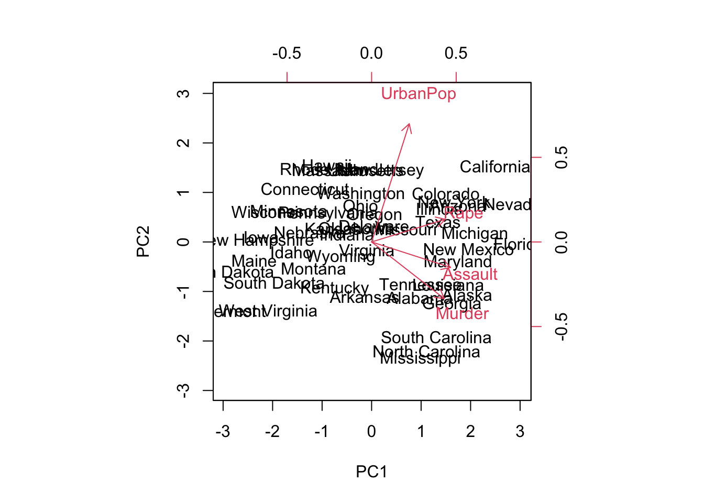
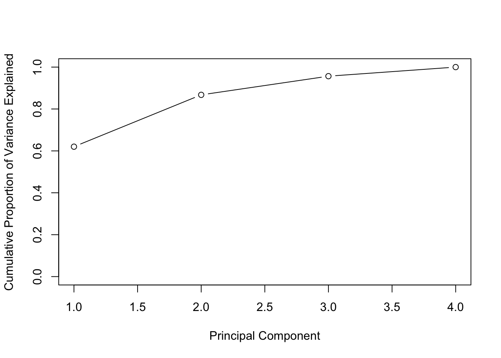
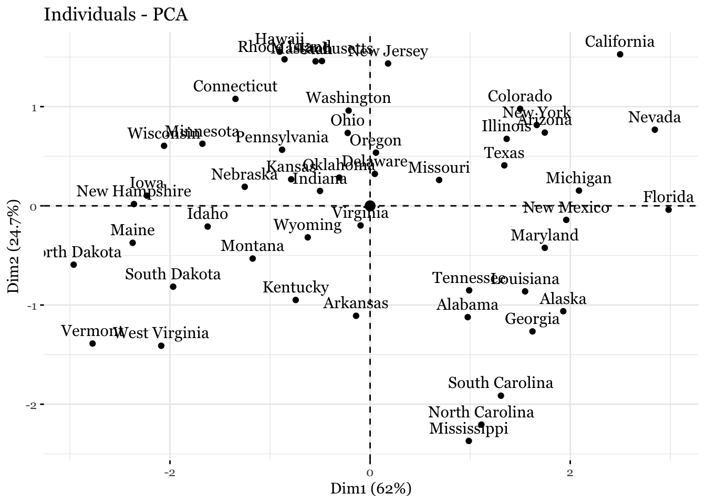
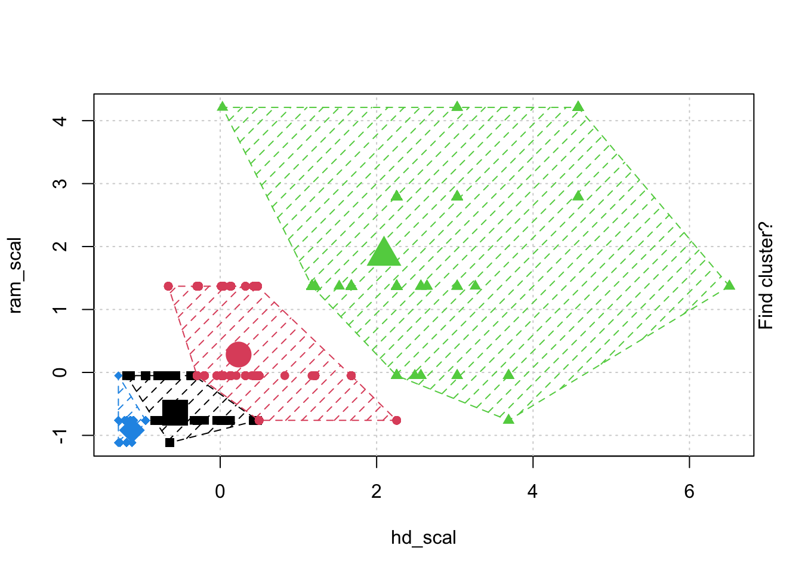
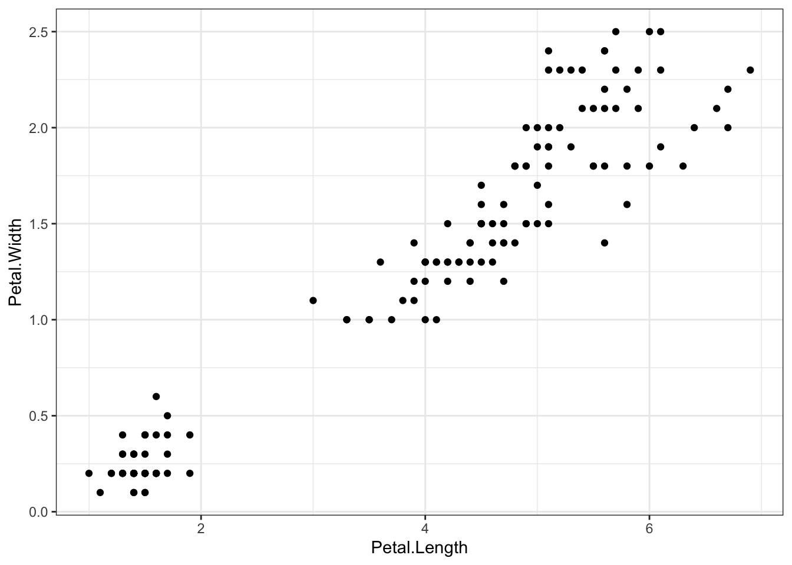
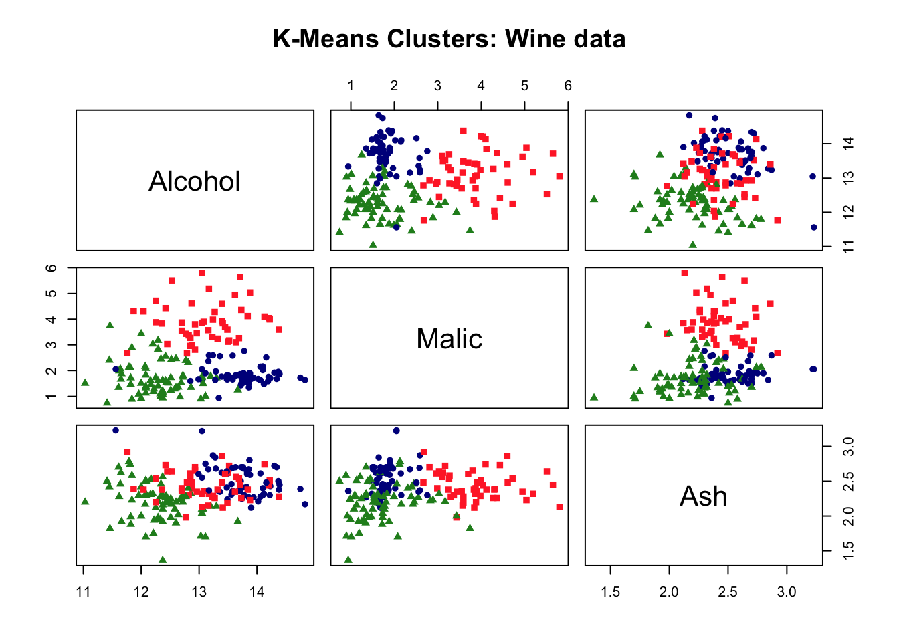
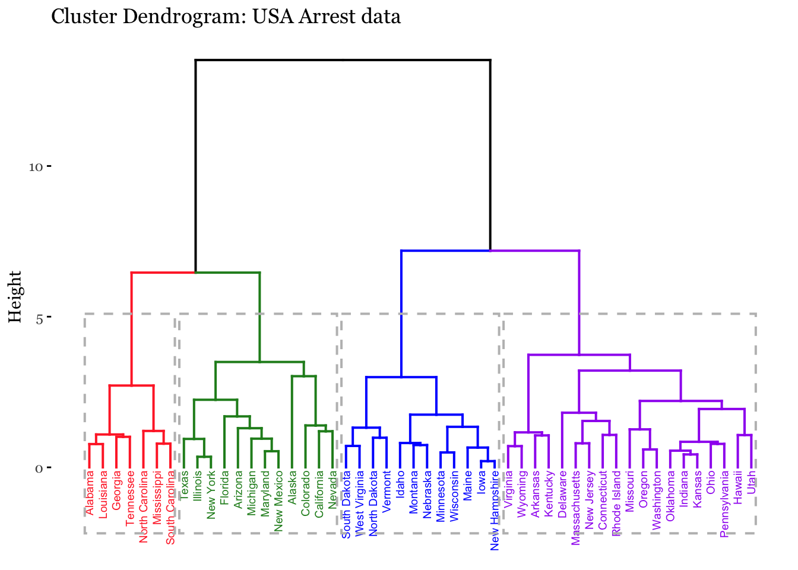

<!DOCTYPE html>
<html xmlns="http://www.w3.org/1999/xhtml" lang="en" xml:lang="en"><head>

<meta charset="utf-8">
<meta name="generator" content="quarto-1.2.269">

<meta name="viewport" content="width=device-width, initial-scale=1.0, user-scalable=yes">


<title>Arslan Khalid - Assignment 4</title>
<style>
code{white-space: pre-wrap;}
span.smallcaps{font-variant: small-caps;}
div.columns{display: flex; gap: min(4vw, 1.5em);}
div.column{flex: auto; overflow-x: auto;}
div.hanging-indent{margin-left: 1.5em; text-indent: -1.5em;}
ul.task-list{list-style: none;}
ul.task-list li input[type="checkbox"] {
  width: 0.8em;
  margin: 0 0.8em 0.2em -1.6em;
  vertical-align: middle;
}
pre > code.sourceCode { white-space: pre; position: relative; }
pre > code.sourceCode > span { display: inline-block; line-height: 1.25; }
pre > code.sourceCode > span:empty { height: 1.2em; }
.sourceCode { overflow: visible; }
code.sourceCode > span { color: inherit; text-decoration: inherit; }
div.sourceCode { margin: 1em 0; }
pre.sourceCode { margin: 0; }
@media screen {
div.sourceCode { overflow: auto; }
}
@media print {
pre > code.sourceCode { white-space: pre-wrap; }
pre > code.sourceCode > span { text-indent: -5em; padding-left: 5em; }
}
pre.numberSource code
  { counter-reset: source-line 0; }
pre.numberSource code > span
  { position: relative; left: -4em; counter-increment: source-line; }
pre.numberSource code > span > a:first-child::before
  { content: counter(source-line);
    position: relative; left: -1em; text-align: right; vertical-align: baseline;
    border: none; display: inline-block;
    -webkit-touch-callout: none; -webkit-user-select: none;
    -khtml-user-select: none; -moz-user-select: none;
    -ms-user-select: none; user-select: none;
    padding: 0 4px; width: 4em;
    color: #aaaaaa;
  }
pre.numberSource { margin-left: 3em; border-left: 1px solid #aaaaaa;  padding-left: 4px; }
div.sourceCode
  {   }
@media screen {
pre > code.sourceCode > span > a:first-child::before { text-decoration: underline; }
}
code span.al { color: #ff0000; font-weight: bold; } /* Alert */
code span.an { color: #60a0b0; font-weight: bold; font-style: italic; } /* Annotation */
code span.at { color: #7d9029; } /* Attribute */
code span.bn { color: #40a070; } /* BaseN */
code span.bu { color: #008000; } /* BuiltIn */
code span.cf { color: #007020; font-weight: bold; } /* ControlFlow */
code span.ch { color: #4070a0; } /* Char */
code span.cn { color: #880000; } /* Constant */
code span.co { color: #60a0b0; font-style: italic; } /* Comment */
code span.cv { color: #60a0b0; font-weight: bold; font-style: italic; } /* CommentVar */
code span.do { color: #ba2121; font-style: italic; } /* Documentation */
code span.dt { color: #902000; } /* DataType */
code span.dv { color: #40a070; } /* DecVal */
code span.er { color: #ff0000; font-weight: bold; } /* Error */
code span.ex { } /* Extension */
code span.fl { color: #40a070; } /* Float */
code span.fu { color: #06287e; } /* Function */
code span.im { color: #008000; font-weight: bold; } /* Import */
code span.in { color: #60a0b0; font-weight: bold; font-style: italic; } /* Information */
code span.kw { color: #007020; font-weight: bold; } /* Keyword */
code span.op { color: #666666; } /* Operator */
code span.ot { color: #007020; } /* Other */
code span.pp { color: #bc7a00; } /* Preprocessor */
code span.sc { color: #4070a0; } /* SpecialChar */
code span.ss { color: #bb6688; } /* SpecialString */
code span.st { color: #4070a0; } /* String */
code span.va { color: #19177c; } /* Variable */
code span.vs { color: #4070a0; } /* VerbatimString */
code span.wa { color: #60a0b0; font-weight: bold; font-style: italic; } /* Warning */
</style>


<script src="site_libs/quarto-nav/quarto-nav.js"></script>
<script src="site_libs/clipboard/clipboard.min.js"></script>
<script src="site_libs/quarto-search/autocomplete.umd.js"></script>
<script src="site_libs/quarto-search/fuse.min.js"></script>
<script src="site_libs/quarto-search/quarto-search.js"></script>
<meta name="quarto:offset" content="./">
<link href="./CV_Arslan_Khalid_2022.pdf" rel="next">
<link href="./assign_03.html" rel="prev">
<script src="site_libs/quarto-html/quarto.js"></script>
<script src="site_libs/quarto-html/popper.min.js"></script>
<script src="site_libs/quarto-html/tippy.umd.min.js"></script>
<script src="site_libs/quarto-html/anchor.min.js"></script>
<link href="site_libs/quarto-html/tippy.css" rel="stylesheet">
<link href="site_libs/quarto-html/quarto-syntax-highlighting.css" rel="stylesheet" id="quarto-text-highlighting-styles">
<script src="site_libs/bootstrap/bootstrap.min.js"></script>
<link href="site_libs/bootstrap/bootstrap-icons.css" rel="stylesheet">
<link href="site_libs/bootstrap/bootstrap.min.css" rel="stylesheet" id="quarto-bootstrap" data-mode="light">
<script id="quarto-search-options" type="application/json">{
  "location": "sidebar",
  "copy-button": false,
  "collapse-after": 3,
  "panel-placement": "start",
  "type": "textbox",
  "limit": 20,
  "language": {
    "search-no-results-text": "No results",
    "search-matching-documents-text": "matching documents",
    "search-copy-link-title": "Copy link to search",
    "search-hide-matches-text": "Hide additional matches",
    "search-more-match-text": "more match in this document",
    "search-more-matches-text": "more matches in this document",
    "search-clear-button-title": "Clear",
    "search-detached-cancel-button-title": "Cancel",
    "search-submit-button-title": "Submit"
  }
}</script>
<link href="https://fonts.googleapis.com/css2?family=Figtree:ital,wght@0,400;0,700;0,800;1,400;1,700&amp;family=Spectral:ital,wght@0,500;0,800;1,500;1,800&amp;family=Ubuntu+Mono&amp;display=swap" rel="stylesheet">


<meta name="twitter:title" content="Arslan Khalid - Assignment 4">
<meta name="twitter:description" content="References">
<meta name="twitter:image" content="https://arslank87.wixsite.com/arslankhalid/images/logo_image2.jpeg">
<meta name="twitter:creator" content="@arslan_k">
<meta name="twitter:card" content="summary_large_image">
</head>

<body class="nav-sidebar docked">

<div id="quarto-search-results"></div>
  <header id="quarto-header" class="headroom fixed-top">
  <nav class="quarto-secondary-nav" data-bs-toggle="collapse" data-bs-target="#quarto-sidebar" aria-controls="quarto-sidebar" aria-expanded="false" aria-label="Toggle sidebar navigation" onclick="if (window.quartoToggleHeadroom) { window.quartoToggleHeadroom(); }">
    <div class="container-fluid d-flex justify-content-between">
      <h1 class="quarto-secondary-nav-title">Assignment 4</h1>
      <button type="button" class="quarto-btn-toggle btn" aria-label="Show secondary navigation">
        <i class="bi bi-chevron-right"></i>
      </button>
    </div>
  </nav>
</header>
<!-- content -->
<div id="quarto-content" class="quarto-container page-columns page-rows-contents page-layout-article">
<!-- sidebar -->
  <nav id="quarto-sidebar" class="sidebar collapse sidebar-navigation docked overflow-auto">
    <div class="pt-lg-2 mt-2 text-center sidebar-header">
      <a href="./index.html" class="sidebar-logo-link">
      
      </a>
      <div class="sidebar-tools-main tools-wide">
    <a href="https://github.com/arslankhalid-1" title="My GitHub" class="sidebar-tool px-1"><i class="bi bi-github"></i></a>
    <a href="mailto:arslan.khalid@utdallas.edu" title="Email" class="sidebar-tool px-1"><i class="bi bi-envelope"></i></a>
    <a href="https://twitter.com/arslan_k" title="Twitter" class="sidebar-tool px-1"><i class="bi bi-twitter"></i></a>
</div>
      </div>
      <div class="mt-2 flex-shrink-0 align-items-center">
        <div class="sidebar-search">
        <div id="quarto-search" class="" title="Search"></div>
        </div>
      </div>
    <div class="sidebar-menu-container"> 
    <ul class="list-unstyled mt-1">
        <li class="sidebar-item sidebar-item-section">
      <div class="sidebar-item-container"> 
            <a class="sidebar-item-text sidebar-link text-start" data-bs-toggle="collapse" data-bs-target="#quarto-sidebar-section-1" aria-expanded="true">Assignments</a>
          <a class="sidebar-item-toggle text-start" data-bs-toggle="collapse" data-bs-target="#quarto-sidebar-section-1" aria-expanded="true">
            <i class="bi bi-chevron-right ms-2"></i>
          </a> 
      </div>
      <ul id="quarto-sidebar-section-1" class="collapse list-unstyled sidebar-section depth1 show">  
          <li class="sidebar-item">
  <div class="sidebar-item-container"> 
  <a href="./assign_01.qmd" class="sidebar-item-text sidebar-link">Assignment 1</a>
  </div>
</li>
          <li class="sidebar-item sidebar-item-section">
      <div class="sidebar-item-container"> 
            <a class="sidebar-item-text sidebar-link text-start collapsed" data-bs-toggle="collapse" data-bs-target="#quarto-sidebar-section-2" aria-expanded="false">Assignment 2</a>
          <a class="sidebar-item-toggle text-start collapsed" data-bs-toggle="collapse" data-bs-target="#quarto-sidebar-section-2" aria-expanded="false">
            <i class="bi bi-chevron-right ms-2"></i>
          </a> 
      </div>
      <ul id="quarto-sidebar-section-2" class="collapse list-unstyled sidebar-section depth2 ">  
          <li class="sidebar-item">
  <div class="sidebar-item-container"> 
  <a href="./assign_02.html" class="sidebar-item-text sidebar-link">Lab 01 &amp; 02</a>
  </div>
</li>
          <li class="sidebar-item">
  <div class="sidebar-item-container"> 
  <a href="./assign_02b.html" class="sidebar-item-text sidebar-link">Data Analysis</a>
  </div>
</li>
      </ul>
  </li>
          <li class="sidebar-item sidebar-item-section">
      <div class="sidebar-item-container"> 
            <a class="sidebar-item-text sidebar-link text-start collapsed" data-bs-toggle="collapse" data-bs-target="#quarto-sidebar-section-3" aria-expanded="false">Assingment 3</a>
          <a class="sidebar-item-toggle text-start collapsed" data-bs-toggle="collapse" data-bs-target="#quarto-sidebar-section-3" aria-expanded="false">
            <i class="bi bi-chevron-right ms-2"></i>
          </a> 
      </div>
      <ul id="quarto-sidebar-section-3" class="collapse list-unstyled sidebar-section depth2 ">  
          <li class="sidebar-item">
  <div class="sidebar-item-container"> 
  <a href="./lab_03.html" class="sidebar-item-text sidebar-link">Lab 03</a>
  </div>
</li>
          <li class="sidebar-item">
  <div class="sidebar-item-container"> 
  <a href="./assign_03.html" class="sidebar-item-text sidebar-link">Data Analysis</a>
  </div>
</li>
      </ul>
  </li>
          <li class="sidebar-item">
  <div class="sidebar-item-container"> 
  <a href="./assign_04.html" class="sidebar-item-text sidebar-link active">Assignment 4</a>
  </div>
</li>
      </ul>
  </li>
        <li class="sidebar-item sidebar-item-section">
      <div class="sidebar-item-container"> 
            <a class="sidebar-item-text sidebar-link text-start" data-bs-toggle="collapse" data-bs-target="#quarto-sidebar-section-4" aria-expanded="true">About</a>
          <a class="sidebar-item-toggle text-start" data-bs-toggle="collapse" data-bs-target="#quarto-sidebar-section-4" aria-expanded="true">
            <i class="bi bi-chevron-right ms-2"></i>
          </a> 
      </div>
      <ul id="quarto-sidebar-section-4" class="collapse list-unstyled sidebar-section depth1 show">  
          <li class="sidebar-item">
  <div class="sidebar-item-container"> 
  <a href="./CV_Arslan_Khalid_2022.pdf" class="sidebar-item-text sidebar-link">Resume</a>
  </div>
</li>
          <li class="sidebar-item">
  <div class="sidebar-item-container"> 
  <a href="./about.html" class="sidebar-item-text sidebar-link">About</a>
  </div>
</li>
          <li class="sidebar-item">
  <div class="sidebar-item-container"> 
  <a href="./research.qmd" class="sidebar-item-text sidebar-link">Current Research</a>
  </div>
</li>
      </ul>
  </li>
        <li class="sidebar-item">
  <div class="sidebar-item-container"> 
  <a href="./blog.qmd" class="sidebar-item-text sidebar-link">Blog</a>
  </div>
</li>
        <li class="sidebar-item">
  <div class="sidebar-item-container"> 
  <a href="https://arslank87.wixsite.com/arslankhalid" class="sidebar-item-text sidebar-link">Consultant Website</a>
  </div>
</li>
        <li class="sidebar-item">
  <div class="sidebar-item-container"> 
  <a href="https://archive.pakistantoday.com.pk/author/arslan-khalid/" class="sidebar-item-text sidebar-link">Columns</a>
  </div>
</li>
        <li class="sidebar-item">
  <div class="sidebar-item-container"> 
  <a href="https://docs.google.com/presentation/d/1LbaYy7zfQw6VAe-A1KnsgW6zwcfnFS6NwtBz4391u-s/edit?usp=sharing" class="sidebar-item-text sidebar-link">Proposal Presentation</a>
  </div>
</li>
    </ul>
    </div>
</nav>
<!-- margin-sidebar -->
    <div id="quarto-margin-sidebar" class="sidebar margin-sidebar">
        <nav id="TOC" role="doc-toc" class="toc-active">
    <h2 id="toc-title">On this page</h2>
   
  <ul>
  <li><a href="#principal-component-analysis" id="toc-principal-component-analysis" class="nav-link active" data-scroll-target="#principal-component-analysis">1. Principal Component Analysis</a></li>
  <li><a href="#k-means-clustering" id="toc-k-means-clustering" class="nav-link" data-scroll-target="#k-means-clustering">2. K-means Clustering</a></li>
  <li><a href="#hierarchical-clustering" id="toc-hierarchical-clustering" class="nav-link" data-scroll-target="#hierarchical-clustering">3. Hierarchical Clustering</a></li>
  </ul>
</nav>
    </div>
<!-- main -->
<main class="content" id="quarto-document-content">

<header id="title-block-header" class="quarto-title-block default">
<div class="quarto-title">
<div class="quarto-title-block"><div><h1 class="title d-none d-lg-block">Assignment 4</h1><button type="button" class="btn code-tools-button" id="quarto-code-tools-source"><i class="bi"></i> code</button></div></div>
</div>


<div class="quarto-title-meta">

    
  
    
  </div>
  

</header>

<div class="callout-note callout callout-style-default callout-captioned">
<div class="callout-header d-flex align-content-center">
<div class="callout-icon-container">
<i class="callout-icon"></i>
</div>
<div class="callout-caption-container flex-fill">
🔗 SOURCE
</div>
</div>
<div class="callout-body-container callout-body">
<p>Running the programs from <a href="https://datageneration.org/gentlemachinelearning/module4_unsupervisedlearning"><strong><em>Gentle Introduction to Machine Learning.</em></strong></a></p>
</div>
</div>
<section id="principal-component-analysis" class="level3">
<h3 class="anchored" data-anchor-id="principal-component-analysis">1. Principal Component Analysis</h3>
<div class="cell">
<div class="sourceCode cell-code" id="cb1"><pre class="sourceCode r code-with-copy"><code class="sourceCode r"><span id="cb1-1"><a href="#cb1-1" aria-hidden="true" tabindex="-1"></a><span class="co">#install.packages(c("datasets", "ISLR", "factoextra", "dplyr", "ggplot2", "RColorBrewer",  "animation", "readr", "factoextra"))</span></span>
<span id="cb1-2"><a href="#cb1-2" aria-hidden="true" tabindex="-1"></a></span>
<span id="cb1-3"><a href="#cb1-3" aria-hidden="true" tabindex="-1"></a><span class="fu">library</span>(datasets)</span>
<span id="cb1-4"><a href="#cb1-4" aria-hidden="true" tabindex="-1"></a><span class="fu">library</span>(ISLR)</span>
<span id="cb1-5"><a href="#cb1-5" aria-hidden="true" tabindex="-1"></a><span class="fu">library</span>(factoextra)</span></code><button title="Copy to Clipboard" class="code-copy-button"><i class="bi"></i></button></pre></div>
<div class="cell-output cell-output-stderr">
<pre><code>Loading required package: ggplot2</code></pre>
</div>
<div class="cell-output cell-output-stderr">
<pre><code>Welcome! Want to learn more? See two factoextra-related books at https://goo.gl/ve3WBa</code></pre>
</div>
<div class="sourceCode cell-code" id="cb4"><pre class="sourceCode r code-with-copy"><code class="sourceCode r"><span id="cb4-1"><a href="#cb4-1" aria-hidden="true" tabindex="-1"></a><span class="fu">library</span>(dplyr)</span></code><button title="Copy to Clipboard" class="code-copy-button"><i class="bi"></i></button></pre></div>
<div class="cell-output cell-output-stderr">
<pre><code>
Attaching package: 'dplyr'</code></pre>
</div>
<div class="cell-output cell-output-stderr">
<pre><code>The following objects are masked from 'package:stats':

    filter, lag</code></pre>
</div>
<div class="cell-output cell-output-stderr">
<pre><code>The following objects are masked from 'package:base':

    intersect, setdiff, setequal, union</code></pre>
</div>
<div class="sourceCode cell-code" id="cb8"><pre class="sourceCode r code-with-copy"><code class="sourceCode r"><span id="cb8-1"><a href="#cb8-1" aria-hidden="true" tabindex="-1"></a><span class="fu">library</span>(ggplot2)</span>
<span id="cb8-2"><a href="#cb8-2" aria-hidden="true" tabindex="-1"></a><span class="fu">library</span>(RColorBrewer)</span>
<span id="cb8-3"><a href="#cb8-3" aria-hidden="true" tabindex="-1"></a><span class="fu">library</span>(animation)</span>
<span id="cb8-4"><a href="#cb8-4" aria-hidden="true" tabindex="-1"></a><span class="fu">library</span>(readr)</span>
<span id="cb8-5"><a href="#cb8-5" aria-hidden="true" tabindex="-1"></a><span class="fu">library</span>(factoextra)</span>
<span id="cb8-6"><a href="#cb8-6" aria-hidden="true" tabindex="-1"></a></span>
<span id="cb8-7"><a href="#cb8-7" aria-hidden="true" tabindex="-1"></a></span>
<span id="cb8-8"><a href="#cb8-8" aria-hidden="true" tabindex="-1"></a></span>
<span id="cb8-9"><a href="#cb8-9" aria-hidden="true" tabindex="-1"></a>arrest <span class="ot">=</span> USArrests</span>
<span id="cb8-10"><a href="#cb8-10" aria-hidden="true" tabindex="-1"></a>states<span class="ot">=</span><span class="fu">row.names</span>(USArrests)</span>
<span id="cb8-11"><a href="#cb8-11" aria-hidden="true" tabindex="-1"></a><span class="fu">names</span>(USArrests)</span></code><button title="Copy to Clipboard" class="code-copy-button"><i class="bi"></i></button></pre></div>
<div class="cell-output cell-output-stdout">
<pre><code>[1] "Murder"   "Assault"  "UrbanPop" "Rape"    </code></pre>
</div>
<div class="sourceCode cell-code" id="cb10"><pre class="sourceCode r code-with-copy"><code class="sourceCode r"><span id="cb10-1"><a href="#cb10-1" aria-hidden="true" tabindex="-1"></a><span class="co"># Get means and variances of variables</span></span>
<span id="cb10-2"><a href="#cb10-2" aria-hidden="true" tabindex="-1"></a><span class="fu">apply</span>(USArrests, <span class="dv">2</span>, mean)</span></code><button title="Copy to Clipboard" class="code-copy-button"><i class="bi"></i></button></pre></div>
<div class="cell-output cell-output-stdout">
<pre><code>  Murder  Assault UrbanPop     Rape 
   7.788  170.760   65.540   21.232 </code></pre>
</div>
<div class="sourceCode cell-code" id="cb12"><pre class="sourceCode r code-with-copy"><code class="sourceCode r"><span id="cb12-1"><a href="#cb12-1" aria-hidden="true" tabindex="-1"></a><span class="fu">apply</span>(USArrests, <span class="dv">2</span>, var)</span></code><button title="Copy to Clipboard" class="code-copy-button"><i class="bi"></i></button></pre></div>
<div class="cell-output cell-output-stdout">
<pre><code>    Murder    Assault   UrbanPop       Rape 
  18.97047 6945.16571  209.51878   87.72916 </code></pre>
</div>
<div class="sourceCode cell-code" id="cb14"><pre class="sourceCode r code-with-copy"><code class="sourceCode r"><span id="cb14-1"><a href="#cb14-1" aria-hidden="true" tabindex="-1"></a><span class="co"># PCA with scaling</span></span>
<span id="cb14-2"><a href="#cb14-2" aria-hidden="true" tabindex="-1"></a>pr.out<span class="ot">=</span><span class="fu">prcomp</span>(USArrests, <span class="at">scale=</span><span class="cn">TRUE</span>)</span>
<span id="cb14-3"><a href="#cb14-3" aria-hidden="true" tabindex="-1"></a><span class="fu">names</span>(pr.out) <span class="co"># Five</span></span></code><button title="Copy to Clipboard" class="code-copy-button"><i class="bi"></i></button></pre></div>
<div class="cell-output cell-output-stdout">
<pre><code>[1] "sdev"     "rotation" "center"   "scale"    "x"       </code></pre>
</div>
<div class="sourceCode cell-code" id="cb16"><pre class="sourceCode r code-with-copy"><code class="sourceCode r"><span id="cb16-1"><a href="#cb16-1" aria-hidden="true" tabindex="-1"></a>pr.out<span class="sc">$</span>center <span class="co"># the centering and scaling used (means)</span></span></code><button title="Copy to Clipboard" class="code-copy-button"><i class="bi"></i></button></pre></div>
<div class="cell-output cell-output-stdout">
<pre><code>  Murder  Assault UrbanPop     Rape 
   7.788  170.760   65.540   21.232 </code></pre>
</div>
<div class="sourceCode cell-code" id="cb18"><pre class="sourceCode r code-with-copy"><code class="sourceCode r"><span id="cb18-1"><a href="#cb18-1" aria-hidden="true" tabindex="-1"></a>pr.out<span class="sc">$</span>scale <span class="co"># the matrix of variable loadings (eigenvectors)</span></span></code><button title="Copy to Clipboard" class="code-copy-button"><i class="bi"></i></button></pre></div>
<div class="cell-output cell-output-stdout">
<pre><code>   Murder   Assault  UrbanPop      Rape 
 4.355510 83.337661 14.474763  9.366385 </code></pre>
</div>
<div class="sourceCode cell-code" id="cb20"><pre class="sourceCode r code-with-copy"><code class="sourceCode r"><span id="cb20-1"><a href="#cb20-1" aria-hidden="true" tabindex="-1"></a>pr.out<span class="sc">$</span>rotation</span></code><button title="Copy to Clipboard" class="code-copy-button"><i class="bi"></i></button></pre></div>
<div class="cell-output cell-output-stdout">
<pre><code>                PC1        PC2        PC3         PC4
Murder   -0.5358995  0.4181809 -0.3412327  0.64922780
Assault  -0.5831836  0.1879856 -0.2681484 -0.74340748
UrbanPop -0.2781909 -0.8728062 -0.3780158  0.13387773
Rape     -0.5434321 -0.1673186  0.8177779  0.08902432</code></pre>
</div>
<div class="sourceCode cell-code" id="cb22"><pre class="sourceCode r code-with-copy"><code class="sourceCode r"><span id="cb22-1"><a href="#cb22-1" aria-hidden="true" tabindex="-1"></a><span class="fu">dim</span>(pr.out<span class="sc">$</span>x)</span></code><button title="Copy to Clipboard" class="code-copy-button"><i class="bi"></i></button></pre></div>
<div class="cell-output cell-output-stdout">
<pre><code>[1] 50  4</code></pre>
</div>
<div class="sourceCode cell-code" id="cb24"><pre class="sourceCode r code-with-copy"><code class="sourceCode r"><span id="cb24-1"><a href="#cb24-1" aria-hidden="true" tabindex="-1"></a>pr.out<span class="sc">$</span>rotation<span class="ot">=</span><span class="sc">-</span>pr.out<span class="sc">$</span>rotation</span>
<span id="cb24-2"><a href="#cb24-2" aria-hidden="true" tabindex="-1"></a>pr.out<span class="sc">$</span>x<span class="ot">=</span><span class="sc">-</span>pr.out<span class="sc">$</span>x</span>
<span id="cb24-3"><a href="#cb24-3" aria-hidden="true" tabindex="-1"></a><span class="fu">biplot</span>(pr.out, <span class="at">scale=</span><span class="dv">0</span>)</span></code><button title="Copy to Clipboard" class="code-copy-button"><i class="bi"></i></button></pre></div>
<div class="cell-output-display">
<p></p>
</div>
<div class="sourceCode cell-code" id="cb25"><pre class="sourceCode r code-with-copy"><code class="sourceCode r"><span id="cb25-1"><a href="#cb25-1" aria-hidden="true" tabindex="-1"></a>pr.out<span class="sc">$</span>sdev</span></code><button title="Copy to Clipboard" class="code-copy-button"><i class="bi"></i></button></pre></div>
<div class="cell-output cell-output-stdout">
<pre><code>[1] 1.5748783 0.9948694 0.5971291 0.4164494</code></pre>
</div>
<div class="sourceCode cell-code" id="cb27"><pre class="sourceCode r code-with-copy"><code class="sourceCode r"><span id="cb27-1"><a href="#cb27-1" aria-hidden="true" tabindex="-1"></a>pr.var<span class="ot">=</span>pr.out<span class="sc">$</span>sdev<span class="sc">^</span><span class="dv">2</span></span>
<span id="cb27-2"><a href="#cb27-2" aria-hidden="true" tabindex="-1"></a>pr.var</span></code><button title="Copy to Clipboard" class="code-copy-button"><i class="bi"></i></button></pre></div>
<div class="cell-output cell-output-stdout">
<pre><code>[1] 2.4802416 0.9897652 0.3565632 0.1734301</code></pre>
</div>
<div class="sourceCode cell-code" id="cb29"><pre class="sourceCode r code-with-copy"><code class="sourceCode r"><span id="cb29-1"><a href="#cb29-1" aria-hidden="true" tabindex="-1"></a>pve<span class="ot">=</span>pr.var<span class="sc">/</span><span class="fu">sum</span>(pr.var)</span>
<span id="cb29-2"><a href="#cb29-2" aria-hidden="true" tabindex="-1"></a>pve</span></code><button title="Copy to Clipboard" class="code-copy-button"><i class="bi"></i></button></pre></div>
<div class="cell-output cell-output-stdout">
<pre><code>[1] 0.62006039 0.24744129 0.08914080 0.04335752</code></pre>
</div>
<div class="sourceCode cell-code" id="cb31"><pre class="sourceCode r code-with-copy"><code class="sourceCode r"><span id="cb31-1"><a href="#cb31-1" aria-hidden="true" tabindex="-1"></a><span class="fu">plot</span>(pve, <span class="at">xlab=</span><span class="st">"Principal Component"</span>, <span class="at">ylab=</span><span class="st">"Proportion of Variance Explained"</span>, <span class="at">ylim=</span><span class="fu">c</span>(<span class="dv">0</span>,<span class="dv">1</span>),<span class="at">type=</span><span class="st">'b'</span>)</span></code><button title="Copy to Clipboard" class="code-copy-button"><i class="bi"></i></button></pre></div>
<div class="cell-output-display">
<p></p>
</div>
<div class="sourceCode cell-code" id="cb32"><pre class="sourceCode r code-with-copy"><code class="sourceCode r"><span id="cb32-1"><a href="#cb32-1" aria-hidden="true" tabindex="-1"></a><span class="fu">plot</span>(<span class="fu">cumsum</span>(pve), <span class="at">xlab=</span><span class="st">"Principal Component"</span>, <span class="at">ylab=</span><span class="st">"Cumulative Proportion of Variance Explained"</span>, <span class="at">ylim=</span><span class="fu">c</span>(<span class="dv">0</span>,<span class="dv">1</span>),<span class="at">type=</span><span class="st">'b'</span>)</span></code><button title="Copy to Clipboard" class="code-copy-button"><i class="bi"></i></button></pre></div>
<div class="cell-output-display">
<p></p>
</div>
<div class="sourceCode cell-code" id="cb33"><pre class="sourceCode r code-with-copy"><code class="sourceCode r"><span id="cb33-1"><a href="#cb33-1" aria-hidden="true" tabindex="-1"></a><span class="fu">fviz</span>(pr.out, <span class="st">"ind"</span>, <span class="at">geom =</span> <span class="st">"auto"</span>, <span class="at">mean.point =</span> <span class="cn">TRUE</span>, <span class="at">font.family =</span> <span class="st">"Georgia"</span>)</span></code><button title="Copy to Clipboard" class="code-copy-button"><i class="bi"></i></button></pre></div>
<div class="cell-output-display">
<p></p>
</div>
<div class="sourceCode cell-code" id="cb34"><pre class="sourceCode r code-with-copy"><code class="sourceCode r"><span id="cb34-1"><a href="#cb34-1" aria-hidden="true" tabindex="-1"></a><span class="fu">fviz_pca_biplot</span>(pr.out, <span class="at">font.family =</span> <span class="st">"Georgia"</span>, <span class="at">col.var=</span><span class="st">"firebrick1"</span>)</span></code><button title="Copy to Clipboard" class="code-copy-button"><i class="bi"></i></button></pre></div>
<div class="cell-output-display">
<p></p>
</div>
</div>
</section>
<section id="k-means-clustering" class="level3">
<h3 class="anchored" data-anchor-id="k-means-clustering">2. K-means Clustering</h3>
<div class="cell">
<div class="sourceCode cell-code" id="cb35"><pre class="sourceCode r code-with-copy"><code class="sourceCode r"><span id="cb35-1"><a href="#cb35-1" aria-hidden="true" tabindex="-1"></a>computers <span class="ot">=</span> <span class="fu">read.csv</span>(<span class="st">"https://raw.githubusercontent.com/guru99-edu/R-Programming/master/computers.csv"</span>) </span>
<span id="cb35-2"><a href="#cb35-2" aria-hidden="true" tabindex="-1"></a></span>
<span id="cb35-3"><a href="#cb35-3" aria-hidden="true" tabindex="-1"></a><span class="co"># Only retain two variables for illustration</span></span>
<span id="cb35-4"><a href="#cb35-4" aria-hidden="true" tabindex="-1"></a>rescaled_comp <span class="ot">&lt;-</span> computers[<span class="dv">4</span><span class="sc">:</span><span class="dv">5</span>] <span class="sc">%&gt;%</span></span>
<span id="cb35-5"><a href="#cb35-5" aria-hidden="true" tabindex="-1"></a>  <span class="fu">mutate</span>(<span class="at">hd_scal =</span> <span class="fu">scale</span>(hd),</span>
<span id="cb35-6"><a href="#cb35-6" aria-hidden="true" tabindex="-1"></a>         <span class="at">ram_scal =</span> <span class="fu">scale</span>(ram)) <span class="sc">%&gt;%</span></span>
<span id="cb35-7"><a href="#cb35-7" aria-hidden="true" tabindex="-1"></a>  <span class="fu">select</span>(<span class="fu">c</span>(hd_scal, ram_scal))</span>
<span id="cb35-8"><a href="#cb35-8" aria-hidden="true" tabindex="-1"></a>        </span>
<span id="cb35-9"><a href="#cb35-9" aria-hidden="true" tabindex="-1"></a><span class="fu">ggplot</span>(<span class="at">data =</span> rescaled_comp, <span class="fu">aes</span>(<span class="at">x =</span> hd_scal, <span class="at">y =</span> ram_scal)) <span class="sc">+</span></span>
<span id="cb35-10"><a href="#cb35-10" aria-hidden="true" tabindex="-1"></a>  <span class="fu">geom_point</span>(<span class="at">pch=</span><span class="dv">20</span>, <span class="at">col =</span> <span class="st">"blue"</span>) <span class="sc">+</span> <span class="fu">theme_bw</span>() <span class="sc">+</span></span>
<span id="cb35-11"><a href="#cb35-11" aria-hidden="true" tabindex="-1"></a>  <span class="fu">labs</span>(<span class="at">x =</span> <span class="st">"Hard drive size (Scaled)"</span>, <span class="at">y =</span><span class="st">"RAM size (Scaled)"</span> ) <span class="sc">+</span></span>
<span id="cb35-12"><a href="#cb35-12" aria-hidden="true" tabindex="-1"></a>  <span class="fu">theme</span>(<span class="at">text =</span> <span class="fu">element_text</span>(<span class="at">family=</span><span class="st">"Georgia"</span>)) </span></code><button title="Copy to Clipboard" class="code-copy-button"><i class="bi"></i></button></pre></div>
<div class="cell-output-display">
<p></p>
</div>
<div class="sourceCode cell-code" id="cb36"><pre class="sourceCode r code-with-copy"><code class="sourceCode r"><span id="cb36-1"><a href="#cb36-1" aria-hidden="true" tabindex="-1"></a><span class="fu">set.seed</span>(<span class="dv">2345</span>)</span>
<span id="cb36-2"><a href="#cb36-2" aria-hidden="true" tabindex="-1"></a></span>
<span id="cb36-3"><a href="#cb36-3" aria-hidden="true" tabindex="-1"></a></span>
<span id="cb36-4"><a href="#cb36-4" aria-hidden="true" tabindex="-1"></a><span class="co"># Animate the K-mean clustering process, cluster no. = 4</span></span>
<span id="cb36-5"><a href="#cb36-5" aria-hidden="true" tabindex="-1"></a><span class="fu">kmeans.ani</span>(rescaled_comp[<span class="dv">1</span><span class="sc">:</span><span class="dv">2</span>], <span class="at">centers =</span> <span class="dv">4</span>, <span class="at">pch =</span> <span class="dv">15</span><span class="sc">:</span><span class="dv">18</span>, <span class="at">col =</span> <span class="dv">1</span><span class="sc">:</span><span class="dv">4</span>) </span></code><button title="Copy to Clipboard" class="code-copy-button"><i class="bi"></i></button></pre></div>
<div class="cell-output-display">
<p></p>
</div>
<div class="cell-output-display">
<p></p>
</div>
<div class="cell-output-display">
<p></p>
</div>
<div class="cell-output-display">
<p></p>
</div>
<div class="cell-output-display">
<p></p>
</div>
<div class="cell-output-display">
<p></p>
</div>
<div class="cell-output-display">
<p></p>
</div>
<div class="cell-output-display">
<p></p>
</div>
<div class="cell-output-display">
<p></p>
</div>
<div class="cell-output-display">
<p></p>
</div>
<div class="sourceCode cell-code" id="cb37"><pre class="sourceCode r code-with-copy"><code class="sourceCode r"><span id="cb37-1"><a href="#cb37-1" aria-hidden="true" tabindex="-1"></a><span class="fu">saveGIF</span>(</span>
<span id="cb37-2"><a href="#cb37-2" aria-hidden="true" tabindex="-1"></a>  <span class="fu">kmeans.ani</span>(rescaled_comp[<span class="dv">1</span><span class="sc">:</span><span class="dv">2</span>], <span class="at">centers =</span> <span class="dv">4</span>, <span class="at">pch =</span> <span class="dv">15</span><span class="sc">:</span><span class="dv">18</span>, <span class="at">col =</span> <span class="dv">1</span><span class="sc">:</span><span class="dv">4</span>) ,</span>
<span id="cb37-3"><a href="#cb37-3" aria-hidden="true" tabindex="-1"></a>  <span class="at">movie.name =</span> <span class="st">"kmeans_animated.gif"</span>,</span>
<span id="cb37-4"><a href="#cb37-4" aria-hidden="true" tabindex="-1"></a>  <span class="at">img.name =</span> <span class="st">"kmeans"</span>,</span>
<span id="cb37-5"><a href="#cb37-5" aria-hidden="true" tabindex="-1"></a>  <span class="at">convert =</span> <span class="st">"magick"</span>,</span>
<span id="cb37-6"><a href="#cb37-6" aria-hidden="true" tabindex="-1"></a>  cmd.fun,</span>
<span id="cb37-7"><a href="#cb37-7" aria-hidden="true" tabindex="-1"></a>  <span class="at">clean =</span> <span class="cn">TRUE</span>,</span>
<span id="cb37-8"><a href="#cb37-8" aria-hidden="true" tabindex="-1"></a>  <span class="at">extra.opts =</span> <span class="st">""</span></span>
<span id="cb37-9"><a href="#cb37-9" aria-hidden="true" tabindex="-1"></a>)</span></code><button title="Copy to Clipboard" class="code-copy-button"><i class="bi"></i></button></pre></div>
<div class="cell-output cell-output-stderr">
<pre><code>Output at: kmeans_animated.gif</code></pre>
</div>
<div class="cell-output cell-output-stdout">
<pre><code>[1] TRUE</code></pre>
</div>
<div class="sourceCode cell-code" id="cb40"><pre class="sourceCode r code-with-copy"><code class="sourceCode r"><span id="cb40-1"><a href="#cb40-1" aria-hidden="true" tabindex="-1"></a><span class="do">## Iris example</span></span>
<span id="cb40-2"><a href="#cb40-2" aria-hidden="true" tabindex="-1"></a></span>
<span id="cb40-3"><a href="#cb40-3" aria-hidden="true" tabindex="-1"></a><span class="co"># Without grouping by species</span></span>
<span id="cb40-4"><a href="#cb40-4" aria-hidden="true" tabindex="-1"></a><span class="fu">ggplot</span>(iris, <span class="fu">aes</span>(Petal.Length, Petal.Width)) <span class="sc">+</span> <span class="fu">geom_point</span>() <span class="sc">+</span> </span>
<span id="cb40-5"><a href="#cb40-5" aria-hidden="true" tabindex="-1"></a>  <span class="fu">theme_bw</span>() <span class="sc">+</span></span>
<span id="cb40-6"><a href="#cb40-6" aria-hidden="true" tabindex="-1"></a>  <span class="fu">scale_color_manual</span>(<span class="at">values=</span><span class="fu">c</span>(<span class="st">"firebrick1"</span>,<span class="st">"forestgreen"</span>,<span class="st">"darkblue"</span>))</span></code><button title="Copy to Clipboard" class="code-copy-button"><i class="bi"></i></button></pre></div>
<div class="cell-output-display">
<p></p>
</div>
<div class="sourceCode cell-code" id="cb41"><pre class="sourceCode r code-with-copy"><code class="sourceCode r"><span id="cb41-1"><a href="#cb41-1" aria-hidden="true" tabindex="-1"></a><span class="co"># With grouping by species</span></span>
<span id="cb41-2"><a href="#cb41-2" aria-hidden="true" tabindex="-1"></a><span class="fu">ggplot</span>(iris, <span class="fu">aes</span>(Petal.Length, Petal.Width, <span class="at">color =</span> Species)) <span class="sc">+</span> <span class="fu">geom_point</span>() <span class="sc">+</span> </span>
<span id="cb41-3"><a href="#cb41-3" aria-hidden="true" tabindex="-1"></a>  <span class="fu">theme_bw</span>() <span class="sc">+</span></span>
<span id="cb41-4"><a href="#cb41-4" aria-hidden="true" tabindex="-1"></a>  <span class="fu">scale_color_manual</span>(<span class="at">values=</span><span class="fu">c</span>(<span class="st">"firebrick1"</span>,<span class="st">"forestgreen"</span>,<span class="st">"darkblue"</span>))</span></code><button title="Copy to Clipboard" class="code-copy-button"><i class="bi"></i></button></pre></div>
<div class="cell-output-display">
<p></p>
</div>
<div class="sourceCode cell-code" id="cb42"><pre class="sourceCode r code-with-copy"><code class="sourceCode r"><span id="cb42-1"><a href="#cb42-1" aria-hidden="true" tabindex="-1"></a><span class="co"># Check k-means clusters</span></span>
<span id="cb42-2"><a href="#cb42-2" aria-hidden="true" tabindex="-1"></a><span class="do">## Starting with three clusters and 20 initial configurations</span></span>
<span id="cb42-3"><a href="#cb42-3" aria-hidden="true" tabindex="-1"></a><span class="fu">set.seed</span>(<span class="dv">20</span>)</span>
<span id="cb42-4"><a href="#cb42-4" aria-hidden="true" tabindex="-1"></a>irisCluster <span class="ot">&lt;-</span> <span class="fu">kmeans</span>(iris[, <span class="dv">3</span><span class="sc">:</span><span class="dv">4</span>], <span class="dv">3</span>, <span class="at">nstart =</span> <span class="dv">20</span>)</span>
<span id="cb42-5"><a href="#cb42-5" aria-hidden="true" tabindex="-1"></a>irisCluster</span></code><button title="Copy to Clipboard" class="code-copy-button"><i class="bi"></i></button></pre></div>
<div class="cell-output cell-output-stdout">
<pre><code>K-means clustering with 3 clusters of sizes 50, 48, 52

Cluster means:
  Petal.Length Petal.Width
1     1.462000    0.246000
2     5.595833    2.037500
3     4.269231    1.342308

Clustering vector:
  [1] 1 1 1 1 1 1 1 1 1 1 1 1 1 1 1 1 1 1 1 1 1 1 1 1 1 1 1 1 1 1 1 1 1 1 1 1 1
 [38] 1 1 1 1 1 1 1 1 1 1 1 1 1 3 3 3 3 3 3 3 3 3 3 3 3 3 3 3 3 3 3 3 3 3 3 3 3
 [75] 3 3 3 2 3 3 3 3 3 2 3 3 3 3 3 3 3 3 3 3 3 3 3 3 3 3 2 2 2 2 2 2 3 2 2 2 2
[112] 2 2 2 2 2 2 2 2 3 2 2 2 2 2 2 3 2 2 2 2 2 2 2 2 2 2 2 3 2 2 2 2 2 2 2 2 2
[149] 2 2

Within cluster sum of squares by cluster:
[1]  2.02200 16.29167 13.05769
 (between_SS / total_SS =  94.3 %)

Available components:

[1] "cluster"      "centers"      "totss"        "withinss"     "tot.withinss"
[6] "betweenss"    "size"         "iter"         "ifault"      </code></pre>
</div>
<div class="sourceCode cell-code" id="cb44"><pre class="sourceCode r code-with-copy"><code class="sourceCode r"><span id="cb44-1"><a href="#cb44-1" aria-hidden="true" tabindex="-1"></a><span class="fu">class</span>(irisCluster<span class="sc">$</span>cluster)</span></code><button title="Copy to Clipboard" class="code-copy-button"><i class="bi"></i></button></pre></div>
<div class="cell-output cell-output-stdout">
<pre><code>[1] "integer"</code></pre>
</div>
<div class="sourceCode cell-code" id="cb46"><pre class="sourceCode r code-with-copy"><code class="sourceCode r"><span id="cb46-1"><a href="#cb46-1" aria-hidden="true" tabindex="-1"></a><span class="co"># Confusion matrix</span></span>
<span id="cb46-2"><a href="#cb46-2" aria-hidden="true" tabindex="-1"></a><span class="fu">table</span>(irisCluster<span class="sc">$</span>cluster, iris<span class="sc">$</span>Species)</span></code><button title="Copy to Clipboard" class="code-copy-button"><i class="bi"></i></button></pre></div>
<div class="cell-output cell-output-stdout">
<pre><code>   
    setosa versicolor virginica
  1     50          0         0
  2      0          2        46
  3      0         48         4</code></pre>
</div>
<div class="sourceCode cell-code" id="cb48"><pre class="sourceCode r code-with-copy"><code class="sourceCode r"><span id="cb48-1"><a href="#cb48-1" aria-hidden="true" tabindex="-1"></a>irisCluster<span class="sc">$</span>cluster <span class="ot">&lt;-</span> <span class="fu">as.factor</span>(irisCluster<span class="sc">$</span>cluster)</span>
<span id="cb48-2"><a href="#cb48-2" aria-hidden="true" tabindex="-1"></a><span class="fu">ggplot</span>(iris, <span class="fu">aes</span>(Petal.Length, Petal.Width, <span class="at">color =</span> irisCluster<span class="sc">$</span>cluster)) <span class="sc">+</span> <span class="fu">geom_point</span>() <span class="sc">+</span></span>
<span id="cb48-3"><a href="#cb48-3" aria-hidden="true" tabindex="-1"></a>  <span class="fu">scale_color_manual</span>(<span class="at">values=</span><span class="fu">c</span>(<span class="st">"firebrick1"</span>,<span class="st">"forestgreen"</span>,<span class="st">"darkblue"</span>)) <span class="sc">+</span></span>
<span id="cb48-4"><a href="#cb48-4" aria-hidden="true" tabindex="-1"></a>  <span class="fu">theme_bw</span>()</span></code><button title="Copy to Clipboard" class="code-copy-button"><i class="bi"></i></button></pre></div>
<div class="cell-output-display">
<p></p>
</div>
<div class="sourceCode cell-code" id="cb49"><pre class="sourceCode r code-with-copy"><code class="sourceCode r"><span id="cb49-1"><a href="#cb49-1" aria-hidden="true" tabindex="-1"></a>actual <span class="ot">=</span> <span class="fu">ggplot</span>(iris, <span class="fu">aes</span>(Petal.Length, Petal.Width, <span class="at">color =</span> Species)) <span class="sc">+</span> <span class="fu">geom_point</span>() <span class="sc">+</span> </span>
<span id="cb49-2"><a href="#cb49-2" aria-hidden="true" tabindex="-1"></a>  <span class="fu">theme_bw</span>() <span class="sc">+</span></span>
<span id="cb49-3"><a href="#cb49-3" aria-hidden="true" tabindex="-1"></a>  <span class="fu">scale_color_manual</span>(<span class="at">values=</span><span class="fu">c</span>(<span class="st">"firebrick1"</span>,<span class="st">"forestgreen"</span>,<span class="st">"darkblue"</span>)) <span class="sc">+</span></span>
<span id="cb49-4"><a href="#cb49-4" aria-hidden="true" tabindex="-1"></a>  <span class="fu">theme</span>(<span class="at">legend.position=</span><span class="st">"bottom"</span>) <span class="sc">+</span></span>
<span id="cb49-5"><a href="#cb49-5" aria-hidden="true" tabindex="-1"></a>  <span class="fu">theme</span>(<span class="at">text =</span> <span class="fu">element_text</span>(<span class="at">family=</span><span class="st">"Georgia"</span>)) </span>
<span id="cb49-6"><a href="#cb49-6" aria-hidden="true" tabindex="-1"></a>kmc <span class="ot">=</span> <span class="fu">ggplot</span>(iris, <span class="fu">aes</span>(Petal.Length, Petal.Width, <span class="at">color =</span> irisCluster<span class="sc">$</span>cluster)) <span class="sc">+</span> <span class="fu">geom_point</span>() <span class="sc">+</span></span>
<span id="cb49-7"><a href="#cb49-7" aria-hidden="true" tabindex="-1"></a>  <span class="fu">theme_bw</span>() <span class="sc">+</span></span>
<span id="cb49-8"><a href="#cb49-8" aria-hidden="true" tabindex="-1"></a>  <span class="fu">scale_color_manual</span>(<span class="at">values=</span><span class="fu">c</span>(<span class="st">"firebrick1"</span>, <span class="st">"darkblue"</span>, <span class="st">"forestgreen"</span>)) <span class="sc">+</span></span>
<span id="cb49-9"><a href="#cb49-9" aria-hidden="true" tabindex="-1"></a>  <span class="fu">theme</span>(<span class="at">legend.position=</span><span class="st">"bottom"</span>) <span class="sc">+</span></span>
<span id="cb49-10"><a href="#cb49-10" aria-hidden="true" tabindex="-1"></a>  <span class="fu">theme</span>(<span class="at">text =</span> <span class="fu">element_text</span>(<span class="at">family=</span><span class="st">"Georgia"</span>)) </span>
<span id="cb49-11"><a href="#cb49-11" aria-hidden="true" tabindex="-1"></a><span class="fu">library</span>(grid)</span>
<span id="cb49-12"><a href="#cb49-12" aria-hidden="true" tabindex="-1"></a><span class="fu">library</span>(gridExtra)</span></code><button title="Copy to Clipboard" class="code-copy-button"><i class="bi"></i></button></pre></div>
<div class="cell-output cell-output-stderr">
<pre><code>
Attaching package: 'gridExtra'</code></pre>
</div>
<div class="cell-output cell-output-stderr">
<pre><code>The following object is masked from 'package:dplyr':

    combine</code></pre>
</div>
<div class="sourceCode cell-code" id="cb52"><pre class="sourceCode r code-with-copy"><code class="sourceCode r"><span id="cb52-1"><a href="#cb52-1" aria-hidden="true" tabindex="-1"></a><span class="fu">grid.arrange</span>(<span class="fu">arrangeGrob</span>(actual, kmc, <span class="at">ncol=</span><span class="dv">2</span>, <span class="at">widths=</span><span class="fu">c</span>(<span class="dv">1</span>,<span class="dv">1</span>)), <span class="at">nrow=</span><span class="dv">1</span>)</span></code><button title="Copy to Clipboard" class="code-copy-button"><i class="bi"></i></button></pre></div>
<div class="cell-output-display">
<p></p>
</div>
</div>
<div class="cell">
<div class="sourceCode cell-code" id="cb53"><pre class="sourceCode r code-with-copy"><code class="sourceCode r"><span id="cb53-1"><a href="#cb53-1" aria-hidden="true" tabindex="-1"></a><span class="do">## Wine example</span></span>
<span id="cb53-2"><a href="#cb53-2" aria-hidden="true" tabindex="-1"></a></span>
<span id="cb53-3"><a href="#cb53-3" aria-hidden="true" tabindex="-1"></a><span class="co"># The wine dataset contains the results of a chemical analysis of wines </span></span>
<span id="cb53-4"><a href="#cb53-4" aria-hidden="true" tabindex="-1"></a><span class="co"># grown in a specific area of Italy. Three types of wine are represented in the </span></span>
<span id="cb53-5"><a href="#cb53-5" aria-hidden="true" tabindex="-1"></a><span class="co"># 178 samples, with the results of 13 chemical analyses recorded for each sample. </span></span>
<span id="cb53-6"><a href="#cb53-6" aria-hidden="true" tabindex="-1"></a><span class="co"># Variables used in this example:</span></span>
<span id="cb53-7"><a href="#cb53-7" aria-hidden="true" tabindex="-1"></a><span class="co"># Alcohol</span></span>
<span id="cb53-8"><a href="#cb53-8" aria-hidden="true" tabindex="-1"></a><span class="co"># Malic: Malic acid</span></span>
<span id="cb53-9"><a href="#cb53-9" aria-hidden="true" tabindex="-1"></a><span class="co"># Ash</span></span>
<span id="cb53-10"><a href="#cb53-10" aria-hidden="true" tabindex="-1"></a><span class="co"># Source: http://archive.ics.uci.edu/ml/datasets/Wine</span></span>
<span id="cb53-11"><a href="#cb53-11" aria-hidden="true" tabindex="-1"></a></span>
<span id="cb53-12"><a href="#cb53-12" aria-hidden="true" tabindex="-1"></a><span class="co"># Import wine dataset</span></span>
<span id="cb53-13"><a href="#cb53-13" aria-hidden="true" tabindex="-1"></a><span class="fu">library</span>(readr)</span>
<span id="cb53-14"><a href="#cb53-14" aria-hidden="true" tabindex="-1"></a>wine <span class="ot">&lt;-</span> <span class="fu">read_csv</span>(<span class="st">"https://raw.githubusercontent.com/datageneration/gentlemachinelearning/master/data/wine.csv"</span>)</span></code><button title="Copy to Clipboard" class="code-copy-button"><i class="bi"></i></button></pre></div>
<div class="cell-output cell-output-stderr">
<pre><code>Rows: 178 Columns: 14
── Column specification ────────────────────────────────────────────────────────
Delimiter: ","
dbl (14): class, Alcohol, Malic, Ash, Ash_alcalinity, Magnesium, Total_pheno...

ℹ Use `spec()` to retrieve the full column specification for this data.
ℹ Specify the column types or set `show_col_types = FALSE` to quiet this message.</code></pre>
</div>
<div class="sourceCode cell-code" id="cb55"><pre class="sourceCode r code-with-copy"><code class="sourceCode r"><span id="cb55-1"><a href="#cb55-1" aria-hidden="true" tabindex="-1"></a><span class="do">## Choose and scale variables</span></span>
<span id="cb55-2"><a href="#cb55-2" aria-hidden="true" tabindex="-1"></a>wine_subset <span class="ot">&lt;-</span> <span class="fu">scale</span>(wine[ , <span class="fu">c</span>(<span class="dv">2</span><span class="sc">:</span><span class="dv">4</span>)])</span>
<span id="cb55-3"><a href="#cb55-3" aria-hidden="true" tabindex="-1"></a></span>
<span id="cb55-4"><a href="#cb55-4" aria-hidden="true" tabindex="-1"></a><span class="do">## Create cluster using k-means, k = 3, with 25 initial configurations</span></span>
<span id="cb55-5"><a href="#cb55-5" aria-hidden="true" tabindex="-1"></a>wine_cluster <span class="ot">&lt;-</span> <span class="fu">kmeans</span>(wine_subset, <span class="at">centers =</span> <span class="dv">3</span>,</span>
<span id="cb55-6"><a href="#cb55-6" aria-hidden="true" tabindex="-1"></a>                       <span class="at">iter.max =</span> <span class="dv">10</span>,</span>
<span id="cb55-7"><a href="#cb55-7" aria-hidden="true" tabindex="-1"></a>                       <span class="at">nstart =</span> <span class="dv">25</span>)</span>
<span id="cb55-8"><a href="#cb55-8" aria-hidden="true" tabindex="-1"></a>wine_cluster</span></code><button title="Copy to Clipboard" class="code-copy-button"><i class="bi"></i></button></pre></div>
<div class="cell-output cell-output-stdout">
<pre><code>K-means clustering with 3 clusters of sizes 48, 60, 70

Cluster means:
     Alcohol      Malic        Ash
1  0.1470536  1.3907328  0.2534220
2  0.8914655 -0.4522073  0.5406223
3 -0.8649501 -0.5660390 -0.6371656

Clustering vector:
  [1] 2 3 2 2 2 2 2 2 2 2 2 2 2 2 2 2 2 2 2 1 2 1 2 2 2 2 2 3 2 2 2 2 2 2 2 2 2
 [38] 2 3 1 2 1 2 1 3 1 1 2 2 2 3 2 2 2 2 2 2 2 2 3 3 3 3 3 3 3 3 3 2 3 3 2 2 2
 [75] 3 3 3 3 3 1 3 3 3 1 3 3 3 3 3 3 3 3 3 3 3 3 3 3 3 3 3 3 3 3 3 3 3 3 3 3 3
[112] 3 1 3 3 3 3 3 1 3 3 2 1 1 1 3 3 3 3 1 3 1 3 1 3 3 1 1 1 1 1 2 1 1 1 1 1 1
[149] 1 1 1 1 2 1 3 1 1 1 2 2 1 1 1 1 2 1 1 1 2 1 3 3 2 1 1 1 2 1

Within cluster sum of squares by cluster:
[1]  73.71460  67.98619 111.63512
 (between_SS / total_SS =  52.3 %)

Available components:

[1] "cluster"      "centers"      "totss"        "withinss"     "tot.withinss"
[6] "betweenss"    "size"         "iter"         "ifault"      </code></pre>
</div>
<div class="sourceCode cell-code" id="cb57"><pre class="sourceCode r code-with-copy"><code class="sourceCode r"><span id="cb57-1"><a href="#cb57-1" aria-hidden="true" tabindex="-1"></a><span class="co"># Create a function to compute and plot total within-cluster sum of square (within-ness)</span></span>
<span id="cb57-2"><a href="#cb57-2" aria-hidden="true" tabindex="-1"></a>wssplot <span class="ot">&lt;-</span> <span class="cf">function</span>(data, <span class="at">nc=</span><span class="dv">15</span>, <span class="at">seed=</span><span class="dv">1234</span>){</span>
<span id="cb57-3"><a href="#cb57-3" aria-hidden="true" tabindex="-1"></a>  wss <span class="ot">&lt;-</span> (<span class="fu">nrow</span>(data)<span class="sc">-</span><span class="dv">1</span>)<span class="sc">*</span><span class="fu">sum</span>(<span class="fu">apply</span>(data,<span class="dv">2</span>,var))</span>
<span id="cb57-4"><a href="#cb57-4" aria-hidden="true" tabindex="-1"></a>  <span class="cf">for</span> (i <span class="cf">in</span> <span class="dv">2</span><span class="sc">:</span>nc){</span>
<span id="cb57-5"><a href="#cb57-5" aria-hidden="true" tabindex="-1"></a>    <span class="fu">set.seed</span>(seed)</span>
<span id="cb57-6"><a href="#cb57-6" aria-hidden="true" tabindex="-1"></a>    wss[i] <span class="ot">&lt;-</span> <span class="fu">sum</span>(<span class="fu">kmeans</span>(data, <span class="at">centers=</span>i)<span class="sc">$</span>withinss)}</span>
<span id="cb57-7"><a href="#cb57-7" aria-hidden="true" tabindex="-1"></a>  <span class="fu">plot</span>(<span class="dv">1</span><span class="sc">:</span>nc, wss, <span class="at">type=</span><span class="st">"b"</span>, <span class="at">xlab=</span><span class="st">"Number of Clusters"</span>,</span>
<span id="cb57-8"><a href="#cb57-8" aria-hidden="true" tabindex="-1"></a>       <span class="at">ylab=</span><span class="st">"Within groups sum of squares"</span>)</span>
<span id="cb57-9"><a href="#cb57-9" aria-hidden="true" tabindex="-1"></a>}</span>
<span id="cb57-10"><a href="#cb57-10" aria-hidden="true" tabindex="-1"></a></span>
<span id="cb57-11"><a href="#cb57-11" aria-hidden="true" tabindex="-1"></a><span class="co"># plotting values for each cluster starting from 1 to 9</span></span>
<span id="cb57-12"><a href="#cb57-12" aria-hidden="true" tabindex="-1"></a><span class="fu">wssplot</span>(wine_subset, <span class="at">nc =</span> <span class="dv">9</span>)</span></code><button title="Copy to Clipboard" class="code-copy-button"><i class="bi"></i></button></pre></div>
<div class="cell-output-display">
<p></p>
</div>
<div class="sourceCode cell-code" id="cb58"><pre class="sourceCode r code-with-copy"><code class="sourceCode r"><span id="cb58-1"><a href="#cb58-1" aria-hidden="true" tabindex="-1"></a><span class="co"># Plot results by dimensions</span></span>
<span id="cb58-2"><a href="#cb58-2" aria-hidden="true" tabindex="-1"></a>wine_cluster<span class="sc">$</span>cluster <span class="ot">=</span> <span class="fu">as.factor</span>(wine_cluster<span class="sc">$</span>cluster)</span>
<span id="cb58-3"><a href="#cb58-3" aria-hidden="true" tabindex="-1"></a><span class="fu">pairs</span>(wine[<span class="dv">2</span><span class="sc">:</span><span class="dv">4</span>],</span>
<span id="cb58-4"><a href="#cb58-4" aria-hidden="true" tabindex="-1"></a>      <span class="at">col =</span> <span class="fu">c</span>(<span class="st">"firebrick1"</span>, <span class="st">"darkblue"</span>, <span class="st">"forestgreen"</span>)[wine_cluster<span class="sc">$</span>cluster],</span>
<span id="cb58-5"><a href="#cb58-5" aria-hidden="true" tabindex="-1"></a>      <span class="at">pch =</span> <span class="fu">c</span>(<span class="dv">15</span><span class="sc">:</span><span class="dv">17</span>)[wine_cluster<span class="sc">$</span>cluster],</span>
<span id="cb58-6"><a href="#cb58-6" aria-hidden="true" tabindex="-1"></a>      <span class="at">main =</span> <span class="st">"K-Means Clusters: Wine data"</span>)</span></code><button title="Copy to Clipboard" class="code-copy-button"><i class="bi"></i></button></pre></div>
<div class="cell-output-display">
<p></p>
</div>
<div class="sourceCode cell-code" id="cb59"><pre class="sourceCode r code-with-copy"><code class="sourceCode r"><span id="cb59-1"><a href="#cb59-1" aria-hidden="true" tabindex="-1"></a><span class="fu">table</span>(wine_cluster<span class="sc">$</span>cluster)</span></code><button title="Copy to Clipboard" class="code-copy-button"><i class="bi"></i></button></pre></div>
<div class="cell-output cell-output-stdout">
<pre><code>
 1  2  3 
48 60 70 </code></pre>
</div>
<div class="sourceCode cell-code" id="cb61"><pre class="sourceCode r code-with-copy"><code class="sourceCode r"><span id="cb61-1"><a href="#cb61-1" aria-hidden="true" tabindex="-1"></a><span class="do">## Use the factoextra package to do more</span></span>
<span id="cb61-2"><a href="#cb61-2" aria-hidden="true" tabindex="-1"></a><span class="co"># install.packages("factoextra")</span></span>
<span id="cb61-3"><a href="#cb61-3" aria-hidden="true" tabindex="-1"></a></span>
<span id="cb61-4"><a href="#cb61-4" aria-hidden="true" tabindex="-1"></a><span class="fu">library</span>(factoextra)</span>
<span id="cb61-5"><a href="#cb61-5" aria-hidden="true" tabindex="-1"></a><span class="fu">fviz_nbclust</span>(wine_subset, kmeans, <span class="at">method =</span> <span class="st">"wss"</span>)</span></code><button title="Copy to Clipboard" class="code-copy-button"><i class="bi"></i></button></pre></div>
<div class="cell-output-display">
<p></p>
</div>
<div class="sourceCode cell-code" id="cb62"><pre class="sourceCode r code-with-copy"><code class="sourceCode r"><span id="cb62-1"><a href="#cb62-1" aria-hidden="true" tabindex="-1"></a><span class="co"># Use eclust() procedure to do K-Means</span></span>
<span id="cb62-2"><a href="#cb62-2" aria-hidden="true" tabindex="-1"></a>wine.km <span class="ot">&lt;-</span> <span class="fu">eclust</span>(wine_subset, <span class="st">"kmeans"</span>, <span class="at">nboot =</span> <span class="dv">2</span>)</span></code><button title="Copy to Clipboard" class="code-copy-button"><i class="bi"></i></button></pre></div>
<div class="cell-output-display">
<p></p>
</div>
<div class="sourceCode cell-code" id="cb63"><pre class="sourceCode r code-with-copy"><code class="sourceCode r"><span id="cb63-1"><a href="#cb63-1" aria-hidden="true" tabindex="-1"></a><span class="co"># Print result</span></span>
<span id="cb63-2"><a href="#cb63-2" aria-hidden="true" tabindex="-1"></a>wine.km</span></code><button title="Copy to Clipboard" class="code-copy-button"><i class="bi"></i></button></pre></div>
<div class="cell-output cell-output-stdout">
<pre><code>K-means clustering with 3 clusters of sizes 60, 70, 48

Cluster means:
     Alcohol      Malic        Ash
1  0.8914655 -0.4522073  0.5406223
2 -0.8649501 -0.5660390 -0.6371656
3  0.1470536  1.3907328  0.2534220

Clustering vector:
  [1] 1 2 1 1 1 1 1 1 1 1 1 1 1 1 1 1 1 1 1 3 1 3 1 1 1 1 1 2 1 1 1 1 1 1 1 1 1
 [38] 1 2 3 1 3 1 3 2 3 3 1 1 1 2 1 1 1 1 1 1 1 1 2 2 2 2 2 2 2 2 2 1 2 2 1 1 1
 [75] 2 2 2 2 2 3 2 2 2 3 2 2 2 2 2 2 2 2 2 2 2 2 2 2 2 2 2 2 2 2 2 2 2 2 2 2 2
[112] 2 3 2 2 2 2 2 3 2 2 1 3 3 3 2 2 2 2 3 2 3 2 3 2 2 3 3 3 3 3 1 3 3 3 3 3 3
[149] 3 3 3 3 1 3 2 3 3 3 1 1 3 3 3 3 1 3 3 3 1 3 2 2 1 3 3 3 1 3

Within cluster sum of squares by cluster:
[1]  67.98619 111.63512  73.71460
 (between_SS / total_SS =  52.3 %)

Available components:

 [1] "cluster"      "centers"      "totss"        "withinss"     "tot.withinss"
 [6] "betweenss"    "size"         "iter"         "ifault"       "clust_plot"  
[11] "silinfo"      "nbclust"      "data"         "gap_stat"    </code></pre>
</div>
<div class="sourceCode cell-code" id="cb65"><pre class="sourceCode r code-with-copy"><code class="sourceCode r"><span id="cb65-1"><a href="#cb65-1" aria-hidden="true" tabindex="-1"></a><span class="co"># Optimal number of clusters using gap statistics</span></span>
<span id="cb65-2"><a href="#cb65-2" aria-hidden="true" tabindex="-1"></a>wine.km<span class="sc">$</span>nbclust</span></code><button title="Copy to Clipboard" class="code-copy-button"><i class="bi"></i></button></pre></div>
<div class="cell-output cell-output-stdout">
<pre><code>[1] 3</code></pre>
</div>
<div class="sourceCode cell-code" id="cb67"><pre class="sourceCode r code-with-copy"><code class="sourceCode r"><span id="cb67-1"><a href="#cb67-1" aria-hidden="true" tabindex="-1"></a><span class="fu">fviz_nbclust</span>(wine_subset, kmeans, <span class="at">method =</span> <span class="st">"gap_stat"</span>)</span></code><button title="Copy to Clipboard" class="code-copy-button"><i class="bi"></i></button></pre></div>
<div class="cell-output-display">
<p></p>
</div>
<div class="sourceCode cell-code" id="cb68"><pre class="sourceCode r code-with-copy"><code class="sourceCode r"><span id="cb68-1"><a href="#cb68-1" aria-hidden="true" tabindex="-1"></a><span class="co"># Silhouette plot</span></span>
<span id="cb68-2"><a href="#cb68-2" aria-hidden="true" tabindex="-1"></a><span class="fu">fviz_silhouette</span>(wine.km)</span></code><button title="Copy to Clipboard" class="code-copy-button"><i class="bi"></i></button></pre></div>
<div class="cell-output cell-output-stdout">
<pre><code>  cluster size ave.sil.width
1       1   60          0.44
2       2   70          0.33
3       3   48          0.30</code></pre>
</div>
<div class="cell-output-display">
<p></p>
</div>
<div class="sourceCode cell-code" id="cb70"><pre class="sourceCode r code-with-copy"><code class="sourceCode r"><span id="cb70-1"><a href="#cb70-1" aria-hidden="true" tabindex="-1"></a><span class="fu">fviz_cluster</span>(wine_cluster, <span class="at">data =</span> wine_subset) <span class="sc">+</span> </span>
<span id="cb70-2"><a href="#cb70-2" aria-hidden="true" tabindex="-1"></a>  <span class="fu">theme_bw</span>() <span class="sc">+</span></span>
<span id="cb70-3"><a href="#cb70-3" aria-hidden="true" tabindex="-1"></a>  <span class="fu">theme</span>(<span class="at">text =</span> <span class="fu">element_text</span>(<span class="at">family=</span><span class="st">"Georgia"</span>)) </span></code><button title="Copy to Clipboard" class="code-copy-button"><i class="bi"></i></button></pre></div>
<div class="cell-output-display">
<p></p>
</div>
<div class="sourceCode cell-code" id="cb71"><pre class="sourceCode r code-with-copy"><code class="sourceCode r"><span id="cb71-1"><a href="#cb71-1" aria-hidden="true" tabindex="-1"></a><span class="fu">fviz_cluster</span>(wine_cluster, <span class="at">data =</span> wine_subset, <span class="at">ellipse.type =</span> <span class="st">"norm"</span>) <span class="sc">+</span> </span>
<span id="cb71-2"><a href="#cb71-2" aria-hidden="true" tabindex="-1"></a>  <span class="fu">theme_bw</span>() <span class="sc">+</span></span>
<span id="cb71-3"><a href="#cb71-3" aria-hidden="true" tabindex="-1"></a>  <span class="fu">theme</span>(<span class="at">text =</span> <span class="fu">element_text</span>(<span class="at">family=</span><span class="st">"Georgia"</span>)) </span></code><button title="Copy to Clipboard" class="code-copy-button"><i class="bi"></i></button></pre></div>
<div class="cell-output-display">
<p></p>
</div>
</div>
</section>
<section id="hierarchical-clustering" class="level3">
<h3 class="anchored" data-anchor-id="hierarchical-clustering">3. Hierarchical Clustering</h3>
<div class="cell">
<div class="sourceCode cell-code" id="cb72"><pre class="sourceCode r code-with-copy"><code class="sourceCode r"><span id="cb72-1"><a href="#cb72-1" aria-hidden="true" tabindex="-1"></a><span class="do">## Hierarchical Clustering</span></span>
<span id="cb72-2"><a href="#cb72-2" aria-hidden="true" tabindex="-1"></a><span class="do">## Dataset: USArrests</span></span>
<span id="cb72-3"><a href="#cb72-3" aria-hidden="true" tabindex="-1"></a><span class="co">#  install.packages("cluster")</span></span>
<span id="cb72-4"><a href="#cb72-4" aria-hidden="true" tabindex="-1"></a>arrest.hc <span class="ot">&lt;-</span> USArrests <span class="sc">%&gt;%</span></span>
<span id="cb72-5"><a href="#cb72-5" aria-hidden="true" tabindex="-1"></a>  <span class="fu">scale</span>() <span class="sc">%&gt;%</span>                    <span class="co"># Scale all variables</span></span>
<span id="cb72-6"><a href="#cb72-6" aria-hidden="true" tabindex="-1"></a>  <span class="fu">dist</span>(<span class="at">method =</span> <span class="st">"euclidean"</span>) <span class="sc">%&gt;%</span> <span class="co"># Euclidean distance for dissimilarity </span></span>
<span id="cb72-7"><a href="#cb72-7" aria-hidden="true" tabindex="-1"></a>  <span class="fu">hclust</span>(<span class="at">method =</span> <span class="st">"ward.D2"</span>)     <span class="co"># Compute hierarchical clustering</span></span>
<span id="cb72-8"><a href="#cb72-8" aria-hidden="true" tabindex="-1"></a></span>
<span id="cb72-9"><a href="#cb72-9" aria-hidden="true" tabindex="-1"></a><span class="co"># Generate dendrogram using factoextra package</span></span>
<span id="cb72-10"><a href="#cb72-10" aria-hidden="true" tabindex="-1"></a><span class="fu">fviz_dend</span>(arrest.hc, <span class="at">k =</span> <span class="dv">4</span>, <span class="co"># Four groups</span></span>
<span id="cb72-11"><a href="#cb72-11" aria-hidden="true" tabindex="-1"></a>          <span class="at">cex =</span> <span class="fl">0.5</span>, </span>
<span id="cb72-12"><a href="#cb72-12" aria-hidden="true" tabindex="-1"></a>          <span class="at">k_colors =</span> <span class="fu">c</span>(<span class="st">"firebrick1"</span>,<span class="st">"forestgreen"</span>,<span class="st">"blue"</span>, <span class="st">"purple"</span>),</span>
<span id="cb72-13"><a href="#cb72-13" aria-hidden="true" tabindex="-1"></a>          <span class="at">color_labels_by_k =</span> <span class="cn">TRUE</span>, <span class="co"># color labels by groups</span></span>
<span id="cb72-14"><a href="#cb72-14" aria-hidden="true" tabindex="-1"></a>          <span class="at">rect =</span> <span class="cn">TRUE</span>, <span class="co"># Add rectangle (cluster) around groups,</span></span>
<span id="cb72-15"><a href="#cb72-15" aria-hidden="true" tabindex="-1"></a>          <span class="at">main =</span> <span class="st">"Cluster Dendrogram: USA Arrest data"</span></span>
<span id="cb72-16"><a href="#cb72-16" aria-hidden="true" tabindex="-1"></a>) <span class="sc">+</span> <span class="fu">theme</span>(<span class="at">text =</span> <span class="fu">element_text</span>(<span class="at">family=</span><span class="st">"Georgia"</span>)) </span></code><button title="Copy to Clipboard" class="code-copy-button"><i class="bi"></i></button></pre></div>
<div class="cell-output cell-output-stderr">
<pre><code>Warning: The `&lt;scale&gt;` argument of `guides()` cannot be `FALSE`. Use "none" instead as
of ggplot2 3.3.4.
ℹ The deprecated feature was likely used in the factoextra package.
  Please report the issue at &lt;]8;;https://github.com/kassambara/factoextra/issueshttps://github.com/kassambara/factoextra/issues]8;;&gt;.</code></pre>
</div>
<div class="cell-output-display">
<p></p>
</div>
</div>
<p><strong>References</strong></p>
<p>James, Gareth, Daniela Witten, Trevor Hastie, and Robert Tibshirani. 2013&nbsp;<em>An introduction to statistical learning</em>. Vol. 112. New York: Springer.</p>


<!-- -->

</section>

</main> <!-- /main -->
<script id="quarto-html-after-body" type="application/javascript">
window.document.addEventListener("DOMContentLoaded", function (event) {
  const toggleBodyColorMode = (bsSheetEl) => {
    const mode = bsSheetEl.getAttribute("data-mode");
    const bodyEl = window.document.querySelector("body");
    if (mode === "dark") {
      bodyEl.classList.add("quarto-dark");
      bodyEl.classList.remove("quarto-light");
    } else {
      bodyEl.classList.add("quarto-light");
      bodyEl.classList.remove("quarto-dark");
    }
  }
  const toggleBodyColorPrimary = () => {
    const bsSheetEl = window.document.querySelector("link#quarto-bootstrap");
    if (bsSheetEl) {
      toggleBodyColorMode(bsSheetEl);
    }
  }
  toggleBodyColorPrimary();  
  const icon = "";
  const anchorJS = new window.AnchorJS();
  anchorJS.options = {
    placement: 'right',
    icon: icon
  };
  anchorJS.add('.anchored');
  const clipboard = new window.ClipboardJS('.code-copy-button', {
    target: function(trigger) {
      return trigger.previousElementSibling;
    }
  });
  clipboard.on('success', function(e) {
    // button target
    const button = e.trigger;
    // don't keep focus
    button.blur();
    // flash "checked"
    button.classList.add('code-copy-button-checked');
    var currentTitle = button.getAttribute("title");
    button.setAttribute("title", "Copied!");
    let tooltip;
    if (window.bootstrap) {
      button.setAttribute("data-bs-toggle", "tooltip");
      button.setAttribute("data-bs-placement", "left");
      button.setAttribute("data-bs-title", "Copied!");
      tooltip = new bootstrap.Tooltip(button, 
        { trigger: "manual", 
          customClass: "code-copy-button-tooltip",
          offset: [0, -8]});
      tooltip.show();    
    }
    setTimeout(function() {
      if (tooltip) {
        tooltip.hide();
        button.removeAttribute("data-bs-title");
        button.removeAttribute("data-bs-toggle");
        button.removeAttribute("data-bs-placement");
      }
      button.setAttribute("title", currentTitle);
      button.classList.remove('code-copy-button-checked');
    }, 1000);
    // clear code selection
    e.clearSelection();
  });
  const viewSource = window.document.getElementById('quarto-view-source') ||
                     window.document.getElementById('quarto-code-tools-source');
  if (viewSource) {
    const sourceUrl = viewSource.getAttribute("data-quarto-source-url");
    viewSource.addEventListener("click", function(e) {
      if (sourceUrl) {
        // rstudio viewer pane
        if (/\bcapabilities=\b/.test(window.location)) {
          window.open(sourceUrl);
        } else {
          window.location.href = sourceUrl;
        }
      } else {
        const modal = new bootstrap.Modal(document.getElementById('quarto-embedded-source-code-modal'));
        modal.show();
      }
      return false;
    });
  }
  function toggleCodeHandler(show) {
    return function(e) {
      const detailsSrc = window.document.querySelectorAll(".cell > details > .sourceCode");
      for (let i=0; i<detailsSrc.length; i++) {
        const details = detailsSrc[i].parentElement;
        if (show) {
          details.open = true;
        } else {
          details.removeAttribute("open");
        }
      }
      const cellCodeDivs = window.document.querySelectorAll(".cell > .sourceCode");
      const fromCls = show ? "hidden" : "unhidden";
      const toCls = show ? "unhidden" : "hidden";
      for (let i=0; i<cellCodeDivs.length; i++) {
        const codeDiv = cellCodeDivs[i];
        if (codeDiv.classList.contains(fromCls)) {
          codeDiv.classList.remove(fromCls);
          codeDiv.classList.add(toCls);
        } 
      }
      return false;
    }
  }
  const hideAllCode = window.document.getElementById("quarto-hide-all-code");
  if (hideAllCode) {
    hideAllCode.addEventListener("click", toggleCodeHandler(false));
  }
  const showAllCode = window.document.getElementById("quarto-show-all-code");
  if (showAllCode) {
    showAllCode.addEventListener("click", toggleCodeHandler(true));
  }
  function tippyHover(el, contentFn) {
    const config = {
      allowHTML: true,
      content: contentFn,
      maxWidth: 500,
      delay: 100,
      arrow: false,
      appendTo: function(el) {
          return el.parentElement;
      },
      interactive: true,
      interactiveBorder: 10,
      theme: 'quarto',
      placement: 'bottom-start'
    };
    window.tippy(el, config); 
  }
  const noterefs = window.document.querySelectorAll('a[role="doc-noteref"]');
  for (var i=0; i<noterefs.length; i++) {
    const ref = noterefs[i];
    tippyHover(ref, function() {
      // use id or data attribute instead here
      let href = ref.getAttribute('data-footnote-href') || ref.getAttribute('href');
      try { href = new URL(href).hash; } catch {}
      const id = href.replace(/^#\/?/, "");
      const note = window.document.getElementById(id);
      return note.innerHTML;
    });
  }
  const findCites = (el) => {
    const parentEl = el.parentElement;
    if (parentEl) {
      const cites = parentEl.dataset.cites;
      if (cites) {
        return {
          el,
          cites: cites.split(' ')
        };
      } else {
        return findCites(el.parentElement)
      }
    } else {
      return undefined;
    }
  };
  var bibliorefs = window.document.querySelectorAll('a[role="doc-biblioref"]');
  for (var i=0; i<bibliorefs.length; i++) {
    const ref = bibliorefs[i];
    const citeInfo = findCites(ref);
    if (citeInfo) {
      tippyHover(citeInfo.el, function() {
        var popup = window.document.createElement('div');
        citeInfo.cites.forEach(function(cite) {
          var citeDiv = window.document.createElement('div');
          citeDiv.classList.add('hanging-indent');
          citeDiv.classList.add('csl-entry');
          var biblioDiv = window.document.getElementById('ref-' + cite);
          if (biblioDiv) {
            citeDiv.innerHTML = biblioDiv.innerHTML;
          }
          popup.appendChild(citeDiv);
        });
        return popup.innerHTML;
      });
    }
  }
});
</script>
<nav class="page-navigation">
  <div class="nav-page nav-page-previous">
      <a href="./assign_03.html" class="pagination-link">
        <i class="bi bi-arrow-left-short"></i> <span class="nav-page-text">Data Analysis</span>
      </a>          
  </div>
  <div class="nav-page nav-page-next">
      <a href="./CV_Arslan_Khalid_2022.pdf" class="pagination-link">
        <span class="nav-page-text">Resume</span> <i class="bi bi-arrow-right-short"></i>
      </a>
  </div>
</nav><div class="modal fade" id="quarto-embedded-source-code-modal" tabindex="-1" aria-labelledby="quarto-embedded-source-code-modal-label" aria-hidden="true"><div class="modal-dialog modal-dialog-scrollable"><div class="modal-content"><div class="modal-header"><h5 class="modal-title" id="quarto-embedded-source-code-modal-label">Source Code</h5><button class="btn-close" data-bs-dismiss="modal"></button></div><div class="modal-body"><div class="">
<div class="sourceCode" id="cb74" data-shortcodes="false"><pre class="sourceCode markdown code-with-copy"><code class="sourceCode markdown"><span id="cb74-1"><a href="#cb74-1" aria-hidden="true" tabindex="-1"></a><span class="co">---</span></span>
<span id="cb74-2"><a href="#cb74-2" aria-hidden="true" tabindex="-1"></a><span class="an">title:</span><span class="co"> "Assignment 4"</span></span>
<span id="cb74-3"><a href="#cb74-3" aria-hidden="true" tabindex="-1"></a><span class="an">backgroundcolor:</span><span class="co"> "#FCFCF6"</span></span>
<span id="cb74-4"><a href="#cb74-4" aria-hidden="true" tabindex="-1"></a><span class="an">editor:</span><span class="co"> visual</span></span>
<span id="cb74-5"><a href="#cb74-5" aria-hidden="true" tabindex="-1"></a><span class="co">---</span></span>
<span id="cb74-6"><a href="#cb74-6" aria-hidden="true" tabindex="-1"></a></span>
<span id="cb74-7"><a href="#cb74-7" aria-hidden="true" tabindex="-1"></a>::: callout-note</span>
<span id="cb74-8"><a href="#cb74-8" aria-hidden="true" tabindex="-1"></a><span class="fu">## 🔗 SOURCE</span></span>
<span id="cb74-9"><a href="#cb74-9" aria-hidden="true" tabindex="-1"></a></span>
<span id="cb74-10"><a href="#cb74-10" aria-hidden="true" tabindex="-1"></a>Running the programs from <span class="co">[</span><span class="ot">***Gentle Introduction to Machine Learning.***</span><span class="co">](https://datageneration.org/gentlemachinelearning/module4_unsupervisedlearning)</span></span>
<span id="cb74-11"><a href="#cb74-11" aria-hidden="true" tabindex="-1"></a>:::</span>
<span id="cb74-12"><a href="#cb74-12" aria-hidden="true" tabindex="-1"></a></span>
<span id="cb74-13"><a href="#cb74-13" aria-hidden="true" tabindex="-1"></a><span class="fu">### 1. Principal Component Analysis </span></span>
<span id="cb74-14"><a href="#cb74-14" aria-hidden="true" tabindex="-1"></a></span>
<span id="cb74-17"><a href="#cb74-17" aria-hidden="true" tabindex="-1"></a><span class="in">```{r}</span></span>
<span id="cb74-18"><a href="#cb74-18" aria-hidden="true" tabindex="-1"></a><span class="co">#install.packages(c("datasets", "ISLR", "factoextra", "dplyr", "ggplot2", "RColorBrewer",  "animation", "readr", "factoextra"))</span></span>
<span id="cb74-19"><a href="#cb74-19" aria-hidden="true" tabindex="-1"></a></span>
<span id="cb74-20"><a href="#cb74-20" aria-hidden="true" tabindex="-1"></a><span class="fu">library</span>(datasets)</span>
<span id="cb74-21"><a href="#cb74-21" aria-hidden="true" tabindex="-1"></a><span class="fu">library</span>(ISLR)</span>
<span id="cb74-22"><a href="#cb74-22" aria-hidden="true" tabindex="-1"></a><span class="fu">library</span>(factoextra)</span>
<span id="cb74-23"><a href="#cb74-23" aria-hidden="true" tabindex="-1"></a><span class="fu">library</span>(dplyr)</span>
<span id="cb74-24"><a href="#cb74-24" aria-hidden="true" tabindex="-1"></a><span class="fu">library</span>(ggplot2)</span>
<span id="cb74-25"><a href="#cb74-25" aria-hidden="true" tabindex="-1"></a><span class="fu">library</span>(RColorBrewer)</span>
<span id="cb74-26"><a href="#cb74-26" aria-hidden="true" tabindex="-1"></a><span class="fu">library</span>(animation)</span>
<span id="cb74-27"><a href="#cb74-27" aria-hidden="true" tabindex="-1"></a><span class="fu">library</span>(readr)</span>
<span id="cb74-28"><a href="#cb74-28" aria-hidden="true" tabindex="-1"></a><span class="fu">library</span>(factoextra)</span>
<span id="cb74-29"><a href="#cb74-29" aria-hidden="true" tabindex="-1"></a></span>
<span id="cb74-30"><a href="#cb74-30" aria-hidden="true" tabindex="-1"></a></span>
<span id="cb74-31"><a href="#cb74-31" aria-hidden="true" tabindex="-1"></a></span>
<span id="cb74-32"><a href="#cb74-32" aria-hidden="true" tabindex="-1"></a>arrest <span class="ot">=</span> USArrests</span>
<span id="cb74-33"><a href="#cb74-33" aria-hidden="true" tabindex="-1"></a>states<span class="ot">=</span><span class="fu">row.names</span>(USArrests)</span>
<span id="cb74-34"><a href="#cb74-34" aria-hidden="true" tabindex="-1"></a><span class="fu">names</span>(USArrests)</span>
<span id="cb74-35"><a href="#cb74-35" aria-hidden="true" tabindex="-1"></a></span>
<span id="cb74-36"><a href="#cb74-36" aria-hidden="true" tabindex="-1"></a><span class="co"># Get means and variances of variables</span></span>
<span id="cb74-37"><a href="#cb74-37" aria-hidden="true" tabindex="-1"></a><span class="fu">apply</span>(USArrests, <span class="dv">2</span>, mean)</span>
<span id="cb74-38"><a href="#cb74-38" aria-hidden="true" tabindex="-1"></a></span>
<span id="cb74-39"><a href="#cb74-39" aria-hidden="true" tabindex="-1"></a><span class="fu">apply</span>(USArrests, <span class="dv">2</span>, var)</span>
<span id="cb74-40"><a href="#cb74-40" aria-hidden="true" tabindex="-1"></a></span>
<span id="cb74-41"><a href="#cb74-41" aria-hidden="true" tabindex="-1"></a><span class="co"># PCA with scaling</span></span>
<span id="cb74-42"><a href="#cb74-42" aria-hidden="true" tabindex="-1"></a>pr.out<span class="ot">=</span><span class="fu">prcomp</span>(USArrests, <span class="at">scale=</span><span class="cn">TRUE</span>)</span>
<span id="cb74-43"><a href="#cb74-43" aria-hidden="true" tabindex="-1"></a><span class="fu">names</span>(pr.out) <span class="co"># Five</span></span>
<span id="cb74-44"><a href="#cb74-44" aria-hidden="true" tabindex="-1"></a></span>
<span id="cb74-45"><a href="#cb74-45" aria-hidden="true" tabindex="-1"></a>pr.out<span class="sc">$</span>center <span class="co"># the centering and scaling used (means)</span></span>
<span id="cb74-46"><a href="#cb74-46" aria-hidden="true" tabindex="-1"></a></span>
<span id="cb74-47"><a href="#cb74-47" aria-hidden="true" tabindex="-1"></a>pr.out<span class="sc">$</span>scale <span class="co"># the matrix of variable loadings (eigenvectors)</span></span>
<span id="cb74-48"><a href="#cb74-48" aria-hidden="true" tabindex="-1"></a></span>
<span id="cb74-49"><a href="#cb74-49" aria-hidden="true" tabindex="-1"></a>pr.out<span class="sc">$</span>rotation</span>
<span id="cb74-50"><a href="#cb74-50" aria-hidden="true" tabindex="-1"></a></span>
<span id="cb74-51"><a href="#cb74-51" aria-hidden="true" tabindex="-1"></a><span class="fu">dim</span>(pr.out<span class="sc">$</span>x)</span>
<span id="cb74-52"><a href="#cb74-52" aria-hidden="true" tabindex="-1"></a></span>
<span id="cb74-53"><a href="#cb74-53" aria-hidden="true" tabindex="-1"></a>pr.out<span class="sc">$</span>rotation<span class="ot">=</span><span class="sc">-</span>pr.out<span class="sc">$</span>rotation</span>
<span id="cb74-54"><a href="#cb74-54" aria-hidden="true" tabindex="-1"></a>pr.out<span class="sc">$</span>x<span class="ot">=</span><span class="sc">-</span>pr.out<span class="sc">$</span>x</span>
<span id="cb74-55"><a href="#cb74-55" aria-hidden="true" tabindex="-1"></a><span class="fu">biplot</span>(pr.out, <span class="at">scale=</span><span class="dv">0</span>)</span>
<span id="cb74-56"><a href="#cb74-56" aria-hidden="true" tabindex="-1"></a></span>
<span id="cb74-57"><a href="#cb74-57" aria-hidden="true" tabindex="-1"></a>pr.out<span class="sc">$</span>sdev</span>
<span id="cb74-58"><a href="#cb74-58" aria-hidden="true" tabindex="-1"></a></span>
<span id="cb74-59"><a href="#cb74-59" aria-hidden="true" tabindex="-1"></a>pr.var<span class="ot">=</span>pr.out<span class="sc">$</span>sdev<span class="sc">^</span><span class="dv">2</span></span>
<span id="cb74-60"><a href="#cb74-60" aria-hidden="true" tabindex="-1"></a>pr.var</span>
<span id="cb74-61"><a href="#cb74-61" aria-hidden="true" tabindex="-1"></a></span>
<span id="cb74-62"><a href="#cb74-62" aria-hidden="true" tabindex="-1"></a>pve<span class="ot">=</span>pr.var<span class="sc">/</span><span class="fu">sum</span>(pr.var)</span>
<span id="cb74-63"><a href="#cb74-63" aria-hidden="true" tabindex="-1"></a>pve</span>
<span id="cb74-64"><a href="#cb74-64" aria-hidden="true" tabindex="-1"></a></span>
<span id="cb74-65"><a href="#cb74-65" aria-hidden="true" tabindex="-1"></a><span class="fu">plot</span>(pve, <span class="at">xlab=</span><span class="st">"Principal Component"</span>, <span class="at">ylab=</span><span class="st">"Proportion of Variance Explained"</span>, <span class="at">ylim=</span><span class="fu">c</span>(<span class="dv">0</span>,<span class="dv">1</span>),<span class="at">type=</span><span class="st">'b'</span>)</span>
<span id="cb74-66"><a href="#cb74-66" aria-hidden="true" tabindex="-1"></a></span>
<span id="cb74-67"><a href="#cb74-67" aria-hidden="true" tabindex="-1"></a><span class="fu">plot</span>(<span class="fu">cumsum</span>(pve), <span class="at">xlab=</span><span class="st">"Principal Component"</span>, <span class="at">ylab=</span><span class="st">"Cumulative Proportion of Variance Explained"</span>, <span class="at">ylim=</span><span class="fu">c</span>(<span class="dv">0</span>,<span class="dv">1</span>),<span class="at">type=</span><span class="st">'b'</span>)</span>
<span id="cb74-68"><a href="#cb74-68" aria-hidden="true" tabindex="-1"></a></span>
<span id="cb74-69"><a href="#cb74-69" aria-hidden="true" tabindex="-1"></a></span>
<span id="cb74-70"><a href="#cb74-70" aria-hidden="true" tabindex="-1"></a></span>
<span id="cb74-71"><a href="#cb74-71" aria-hidden="true" tabindex="-1"></a><span class="fu">fviz</span>(pr.out, <span class="st">"ind"</span>, <span class="at">geom =</span> <span class="st">"auto"</span>, <span class="at">mean.point =</span> <span class="cn">TRUE</span>, <span class="at">font.family =</span> <span class="st">"Georgia"</span>)</span>
<span id="cb74-72"><a href="#cb74-72" aria-hidden="true" tabindex="-1"></a></span>
<span id="cb74-73"><a href="#cb74-73" aria-hidden="true" tabindex="-1"></a></span>
<span id="cb74-74"><a href="#cb74-74" aria-hidden="true" tabindex="-1"></a><span class="fu">fviz_pca_biplot</span>(pr.out, <span class="at">font.family =</span> <span class="st">"Georgia"</span>, <span class="at">col.var=</span><span class="st">"firebrick1"</span>)</span>
<span id="cb74-75"><a href="#cb74-75" aria-hidden="true" tabindex="-1"></a></span>
<span id="cb74-76"><a href="#cb74-76" aria-hidden="true" tabindex="-1"></a><span class="in">```</span></span>
<span id="cb74-77"><a href="#cb74-77" aria-hidden="true" tabindex="-1"></a></span>
<span id="cb74-78"><a href="#cb74-78" aria-hidden="true" tabindex="-1"></a><span class="fu">### 2. K-means Clustering </span></span>
<span id="cb74-79"><a href="#cb74-79" aria-hidden="true" tabindex="-1"></a></span>
<span id="cb74-82"><a href="#cb74-82" aria-hidden="true" tabindex="-1"></a><span class="in">```{r}</span></span>
<span id="cb74-83"><a href="#cb74-83" aria-hidden="true" tabindex="-1"></a>computers <span class="ot">=</span> <span class="fu">read.csv</span>(<span class="st">"https://raw.githubusercontent.com/guru99-edu/R-Programming/master/computers.csv"</span>) </span>
<span id="cb74-84"><a href="#cb74-84" aria-hidden="true" tabindex="-1"></a></span>
<span id="cb74-85"><a href="#cb74-85" aria-hidden="true" tabindex="-1"></a><span class="co"># Only retain two variables for illustration</span></span>
<span id="cb74-86"><a href="#cb74-86" aria-hidden="true" tabindex="-1"></a>rescaled_comp <span class="ot">&lt;-</span> computers[<span class="dv">4</span><span class="sc">:</span><span class="dv">5</span>] <span class="sc">%&gt;%</span></span>
<span id="cb74-87"><a href="#cb74-87" aria-hidden="true" tabindex="-1"></a>  <span class="fu">mutate</span>(<span class="at">hd_scal =</span> <span class="fu">scale</span>(hd),</span>
<span id="cb74-88"><a href="#cb74-88" aria-hidden="true" tabindex="-1"></a>         <span class="at">ram_scal =</span> <span class="fu">scale</span>(ram)) <span class="sc">%&gt;%</span></span>
<span id="cb74-89"><a href="#cb74-89" aria-hidden="true" tabindex="-1"></a>  <span class="fu">select</span>(<span class="fu">c</span>(hd_scal, ram_scal))</span>
<span id="cb74-90"><a href="#cb74-90" aria-hidden="true" tabindex="-1"></a>        </span>
<span id="cb74-91"><a href="#cb74-91" aria-hidden="true" tabindex="-1"></a><span class="fu">ggplot</span>(<span class="at">data =</span> rescaled_comp, <span class="fu">aes</span>(<span class="at">x =</span> hd_scal, <span class="at">y =</span> ram_scal)) <span class="sc">+</span></span>
<span id="cb74-92"><a href="#cb74-92" aria-hidden="true" tabindex="-1"></a>  <span class="fu">geom_point</span>(<span class="at">pch=</span><span class="dv">20</span>, <span class="at">col =</span> <span class="st">"blue"</span>) <span class="sc">+</span> <span class="fu">theme_bw</span>() <span class="sc">+</span></span>
<span id="cb74-93"><a href="#cb74-93" aria-hidden="true" tabindex="-1"></a>  <span class="fu">labs</span>(<span class="at">x =</span> <span class="st">"Hard drive size (Scaled)"</span>, <span class="at">y =</span><span class="st">"RAM size (Scaled)"</span> ) <span class="sc">+</span></span>
<span id="cb74-94"><a href="#cb74-94" aria-hidden="true" tabindex="-1"></a>  <span class="fu">theme</span>(<span class="at">text =</span> <span class="fu">element_text</span>(<span class="at">family=</span><span class="st">"Georgia"</span>)) </span>
<span id="cb74-95"><a href="#cb74-95" aria-hidden="true" tabindex="-1"></a></span>
<span id="cb74-96"><a href="#cb74-96" aria-hidden="true" tabindex="-1"></a></span>
<span id="cb74-97"><a href="#cb74-97" aria-hidden="true" tabindex="-1"></a><span class="fu">set.seed</span>(<span class="dv">2345</span>)</span>
<span id="cb74-98"><a href="#cb74-98" aria-hidden="true" tabindex="-1"></a></span>
<span id="cb74-99"><a href="#cb74-99" aria-hidden="true" tabindex="-1"></a></span>
<span id="cb74-100"><a href="#cb74-100" aria-hidden="true" tabindex="-1"></a><span class="co"># Animate the K-mean clustering process, cluster no. = 4</span></span>
<span id="cb74-101"><a href="#cb74-101" aria-hidden="true" tabindex="-1"></a><span class="fu">kmeans.ani</span>(rescaled_comp[<span class="dv">1</span><span class="sc">:</span><span class="dv">2</span>], <span class="at">centers =</span> <span class="dv">4</span>, <span class="at">pch =</span> <span class="dv">15</span><span class="sc">:</span><span class="dv">18</span>, <span class="at">col =</span> <span class="dv">1</span><span class="sc">:</span><span class="dv">4</span>) </span>
<span id="cb74-102"><a href="#cb74-102" aria-hidden="true" tabindex="-1"></a></span>
<span id="cb74-103"><a href="#cb74-103" aria-hidden="true" tabindex="-1"></a><span class="fu">saveGIF</span>(</span>
<span id="cb74-104"><a href="#cb74-104" aria-hidden="true" tabindex="-1"></a>  <span class="fu">kmeans.ani</span>(rescaled_comp[<span class="dv">1</span><span class="sc">:</span><span class="dv">2</span>], <span class="at">centers =</span> <span class="dv">4</span>, <span class="at">pch =</span> <span class="dv">15</span><span class="sc">:</span><span class="dv">18</span>, <span class="at">col =</span> <span class="dv">1</span><span class="sc">:</span><span class="dv">4</span>) ,</span>
<span id="cb74-105"><a href="#cb74-105" aria-hidden="true" tabindex="-1"></a>  <span class="at">movie.name =</span> <span class="st">"kmeans_animated.gif"</span>,</span>
<span id="cb74-106"><a href="#cb74-106" aria-hidden="true" tabindex="-1"></a>  <span class="at">img.name =</span> <span class="st">"kmeans"</span>,</span>
<span id="cb74-107"><a href="#cb74-107" aria-hidden="true" tabindex="-1"></a>  <span class="at">convert =</span> <span class="st">"magick"</span>,</span>
<span id="cb74-108"><a href="#cb74-108" aria-hidden="true" tabindex="-1"></a>  cmd.fun,</span>
<span id="cb74-109"><a href="#cb74-109" aria-hidden="true" tabindex="-1"></a>  <span class="at">clean =</span> <span class="cn">TRUE</span>,</span>
<span id="cb74-110"><a href="#cb74-110" aria-hidden="true" tabindex="-1"></a>  <span class="at">extra.opts =</span> <span class="st">""</span></span>
<span id="cb74-111"><a href="#cb74-111" aria-hidden="true" tabindex="-1"></a>)</span>
<span id="cb74-112"><a href="#cb74-112" aria-hidden="true" tabindex="-1"></a><span class="do">## Iris example</span></span>
<span id="cb74-113"><a href="#cb74-113" aria-hidden="true" tabindex="-1"></a></span>
<span id="cb74-114"><a href="#cb74-114" aria-hidden="true" tabindex="-1"></a><span class="co"># Without grouping by species</span></span>
<span id="cb74-115"><a href="#cb74-115" aria-hidden="true" tabindex="-1"></a><span class="fu">ggplot</span>(iris, <span class="fu">aes</span>(Petal.Length, Petal.Width)) <span class="sc">+</span> <span class="fu">geom_point</span>() <span class="sc">+</span> </span>
<span id="cb74-116"><a href="#cb74-116" aria-hidden="true" tabindex="-1"></a>  <span class="fu">theme_bw</span>() <span class="sc">+</span></span>
<span id="cb74-117"><a href="#cb74-117" aria-hidden="true" tabindex="-1"></a>  <span class="fu">scale_color_manual</span>(<span class="at">values=</span><span class="fu">c</span>(<span class="st">"firebrick1"</span>,<span class="st">"forestgreen"</span>,<span class="st">"darkblue"</span>))</span>
<span id="cb74-118"><a href="#cb74-118" aria-hidden="true" tabindex="-1"></a></span>
<span id="cb74-119"><a href="#cb74-119" aria-hidden="true" tabindex="-1"></a><span class="co"># With grouping by species</span></span>
<span id="cb74-120"><a href="#cb74-120" aria-hidden="true" tabindex="-1"></a><span class="fu">ggplot</span>(iris, <span class="fu">aes</span>(Petal.Length, Petal.Width, <span class="at">color =</span> Species)) <span class="sc">+</span> <span class="fu">geom_point</span>() <span class="sc">+</span> </span>
<span id="cb74-121"><a href="#cb74-121" aria-hidden="true" tabindex="-1"></a>  <span class="fu">theme_bw</span>() <span class="sc">+</span></span>
<span id="cb74-122"><a href="#cb74-122" aria-hidden="true" tabindex="-1"></a>  <span class="fu">scale_color_manual</span>(<span class="at">values=</span><span class="fu">c</span>(<span class="st">"firebrick1"</span>,<span class="st">"forestgreen"</span>,<span class="st">"darkblue"</span>))</span>
<span id="cb74-123"><a href="#cb74-123" aria-hidden="true" tabindex="-1"></a></span>
<span id="cb74-124"><a href="#cb74-124" aria-hidden="true" tabindex="-1"></a><span class="co"># Check k-means clusters</span></span>
<span id="cb74-125"><a href="#cb74-125" aria-hidden="true" tabindex="-1"></a><span class="do">## Starting with three clusters and 20 initial configurations</span></span>
<span id="cb74-126"><a href="#cb74-126" aria-hidden="true" tabindex="-1"></a><span class="fu">set.seed</span>(<span class="dv">20</span>)</span>
<span id="cb74-127"><a href="#cb74-127" aria-hidden="true" tabindex="-1"></a>irisCluster <span class="ot">&lt;-</span> <span class="fu">kmeans</span>(iris[, <span class="dv">3</span><span class="sc">:</span><span class="dv">4</span>], <span class="dv">3</span>, <span class="at">nstart =</span> <span class="dv">20</span>)</span>
<span id="cb74-128"><a href="#cb74-128" aria-hidden="true" tabindex="-1"></a>irisCluster</span>
<span id="cb74-129"><a href="#cb74-129" aria-hidden="true" tabindex="-1"></a></span>
<span id="cb74-130"><a href="#cb74-130" aria-hidden="true" tabindex="-1"></a><span class="fu">class</span>(irisCluster<span class="sc">$</span>cluster)</span>
<span id="cb74-131"><a href="#cb74-131" aria-hidden="true" tabindex="-1"></a></span>
<span id="cb74-132"><a href="#cb74-132" aria-hidden="true" tabindex="-1"></a><span class="co"># Confusion matrix</span></span>
<span id="cb74-133"><a href="#cb74-133" aria-hidden="true" tabindex="-1"></a><span class="fu">table</span>(irisCluster<span class="sc">$</span>cluster, iris<span class="sc">$</span>Species)</span>
<span id="cb74-134"><a href="#cb74-134" aria-hidden="true" tabindex="-1"></a></span>
<span id="cb74-135"><a href="#cb74-135" aria-hidden="true" tabindex="-1"></a>irisCluster<span class="sc">$</span>cluster <span class="ot">&lt;-</span> <span class="fu">as.factor</span>(irisCluster<span class="sc">$</span>cluster)</span>
<span id="cb74-136"><a href="#cb74-136" aria-hidden="true" tabindex="-1"></a><span class="fu">ggplot</span>(iris, <span class="fu">aes</span>(Petal.Length, Petal.Width, <span class="at">color =</span> irisCluster<span class="sc">$</span>cluster)) <span class="sc">+</span> <span class="fu">geom_point</span>() <span class="sc">+</span></span>
<span id="cb74-137"><a href="#cb74-137" aria-hidden="true" tabindex="-1"></a>  <span class="fu">scale_color_manual</span>(<span class="at">values=</span><span class="fu">c</span>(<span class="st">"firebrick1"</span>,<span class="st">"forestgreen"</span>,<span class="st">"darkblue"</span>)) <span class="sc">+</span></span>
<span id="cb74-138"><a href="#cb74-138" aria-hidden="true" tabindex="-1"></a>  <span class="fu">theme_bw</span>()</span>
<span id="cb74-139"><a href="#cb74-139" aria-hidden="true" tabindex="-1"></a></span>
<span id="cb74-140"><a href="#cb74-140" aria-hidden="true" tabindex="-1"></a>actual <span class="ot">=</span> <span class="fu">ggplot</span>(iris, <span class="fu">aes</span>(Petal.Length, Petal.Width, <span class="at">color =</span> Species)) <span class="sc">+</span> <span class="fu">geom_point</span>() <span class="sc">+</span> </span>
<span id="cb74-141"><a href="#cb74-141" aria-hidden="true" tabindex="-1"></a>  <span class="fu">theme_bw</span>() <span class="sc">+</span></span>
<span id="cb74-142"><a href="#cb74-142" aria-hidden="true" tabindex="-1"></a>  <span class="fu">scale_color_manual</span>(<span class="at">values=</span><span class="fu">c</span>(<span class="st">"firebrick1"</span>,<span class="st">"forestgreen"</span>,<span class="st">"darkblue"</span>)) <span class="sc">+</span></span>
<span id="cb74-143"><a href="#cb74-143" aria-hidden="true" tabindex="-1"></a>  <span class="fu">theme</span>(<span class="at">legend.position=</span><span class="st">"bottom"</span>) <span class="sc">+</span></span>
<span id="cb74-144"><a href="#cb74-144" aria-hidden="true" tabindex="-1"></a>  <span class="fu">theme</span>(<span class="at">text =</span> <span class="fu">element_text</span>(<span class="at">family=</span><span class="st">"Georgia"</span>)) </span>
<span id="cb74-145"><a href="#cb74-145" aria-hidden="true" tabindex="-1"></a>kmc <span class="ot">=</span> <span class="fu">ggplot</span>(iris, <span class="fu">aes</span>(Petal.Length, Petal.Width, <span class="at">color =</span> irisCluster<span class="sc">$</span>cluster)) <span class="sc">+</span> <span class="fu">geom_point</span>() <span class="sc">+</span></span>
<span id="cb74-146"><a href="#cb74-146" aria-hidden="true" tabindex="-1"></a>  <span class="fu">theme_bw</span>() <span class="sc">+</span></span>
<span id="cb74-147"><a href="#cb74-147" aria-hidden="true" tabindex="-1"></a>  <span class="fu">scale_color_manual</span>(<span class="at">values=</span><span class="fu">c</span>(<span class="st">"firebrick1"</span>, <span class="st">"darkblue"</span>, <span class="st">"forestgreen"</span>)) <span class="sc">+</span></span>
<span id="cb74-148"><a href="#cb74-148" aria-hidden="true" tabindex="-1"></a>  <span class="fu">theme</span>(<span class="at">legend.position=</span><span class="st">"bottom"</span>) <span class="sc">+</span></span>
<span id="cb74-149"><a href="#cb74-149" aria-hidden="true" tabindex="-1"></a>  <span class="fu">theme</span>(<span class="at">text =</span> <span class="fu">element_text</span>(<span class="at">family=</span><span class="st">"Georgia"</span>)) </span>
<span id="cb74-150"><a href="#cb74-150" aria-hidden="true" tabindex="-1"></a><span class="fu">library</span>(grid)</span>
<span id="cb74-151"><a href="#cb74-151" aria-hidden="true" tabindex="-1"></a><span class="fu">library</span>(gridExtra)</span>
<span id="cb74-152"><a href="#cb74-152" aria-hidden="true" tabindex="-1"></a><span class="fu">grid.arrange</span>(<span class="fu">arrangeGrob</span>(actual, kmc, <span class="at">ncol=</span><span class="dv">2</span>, <span class="at">widths=</span><span class="fu">c</span>(<span class="dv">1</span>,<span class="dv">1</span>)), <span class="at">nrow=</span><span class="dv">1</span>)</span>
<span id="cb74-153"><a href="#cb74-153" aria-hidden="true" tabindex="-1"></a><span class="in">```</span></span>
<span id="cb74-154"><a href="#cb74-154" aria-hidden="true" tabindex="-1"></a></span>
<span id="cb74-157"><a href="#cb74-157" aria-hidden="true" tabindex="-1"></a><span class="in">```{r}</span></span>
<span id="cb74-158"><a href="#cb74-158" aria-hidden="true" tabindex="-1"></a><span class="do">## Wine example</span></span>
<span id="cb74-159"><a href="#cb74-159" aria-hidden="true" tabindex="-1"></a></span>
<span id="cb74-160"><a href="#cb74-160" aria-hidden="true" tabindex="-1"></a><span class="co"># The wine dataset contains the results of a chemical analysis of wines </span></span>
<span id="cb74-161"><a href="#cb74-161" aria-hidden="true" tabindex="-1"></a><span class="co"># grown in a specific area of Italy. Three types of wine are represented in the </span></span>
<span id="cb74-162"><a href="#cb74-162" aria-hidden="true" tabindex="-1"></a><span class="co"># 178 samples, with the results of 13 chemical analyses recorded for each sample. </span></span>
<span id="cb74-163"><a href="#cb74-163" aria-hidden="true" tabindex="-1"></a><span class="co"># Variables used in this example:</span></span>
<span id="cb74-164"><a href="#cb74-164" aria-hidden="true" tabindex="-1"></a><span class="co"># Alcohol</span></span>
<span id="cb74-165"><a href="#cb74-165" aria-hidden="true" tabindex="-1"></a><span class="co"># Malic: Malic acid</span></span>
<span id="cb74-166"><a href="#cb74-166" aria-hidden="true" tabindex="-1"></a><span class="co"># Ash</span></span>
<span id="cb74-167"><a href="#cb74-167" aria-hidden="true" tabindex="-1"></a><span class="co"># Source: http://archive.ics.uci.edu/ml/datasets/Wine</span></span>
<span id="cb74-168"><a href="#cb74-168" aria-hidden="true" tabindex="-1"></a></span>
<span id="cb74-169"><a href="#cb74-169" aria-hidden="true" tabindex="-1"></a><span class="co"># Import wine dataset</span></span>
<span id="cb74-170"><a href="#cb74-170" aria-hidden="true" tabindex="-1"></a><span class="fu">library</span>(readr)</span>
<span id="cb74-171"><a href="#cb74-171" aria-hidden="true" tabindex="-1"></a>wine <span class="ot">&lt;-</span> <span class="fu">read_csv</span>(<span class="st">"https://raw.githubusercontent.com/datageneration/gentlemachinelearning/master/data/wine.csv"</span>)</span>
<span id="cb74-172"><a href="#cb74-172" aria-hidden="true" tabindex="-1"></a></span>
<span id="cb74-173"><a href="#cb74-173" aria-hidden="true" tabindex="-1"></a></span>
<span id="cb74-174"><a href="#cb74-174" aria-hidden="true" tabindex="-1"></a><span class="do">## Choose and scale variables</span></span>
<span id="cb74-175"><a href="#cb74-175" aria-hidden="true" tabindex="-1"></a>wine_subset <span class="ot">&lt;-</span> <span class="fu">scale</span>(wine[ , <span class="fu">c</span>(<span class="dv">2</span><span class="sc">:</span><span class="dv">4</span>)])</span>
<span id="cb74-176"><a href="#cb74-176" aria-hidden="true" tabindex="-1"></a></span>
<span id="cb74-177"><a href="#cb74-177" aria-hidden="true" tabindex="-1"></a><span class="do">## Create cluster using k-means, k = 3, with 25 initial configurations</span></span>
<span id="cb74-178"><a href="#cb74-178" aria-hidden="true" tabindex="-1"></a>wine_cluster <span class="ot">&lt;-</span> <span class="fu">kmeans</span>(wine_subset, <span class="at">centers =</span> <span class="dv">3</span>,</span>
<span id="cb74-179"><a href="#cb74-179" aria-hidden="true" tabindex="-1"></a>                       <span class="at">iter.max =</span> <span class="dv">10</span>,</span>
<span id="cb74-180"><a href="#cb74-180" aria-hidden="true" tabindex="-1"></a>                       <span class="at">nstart =</span> <span class="dv">25</span>)</span>
<span id="cb74-181"><a href="#cb74-181" aria-hidden="true" tabindex="-1"></a>wine_cluster</span>
<span id="cb74-182"><a href="#cb74-182" aria-hidden="true" tabindex="-1"></a></span>
<span id="cb74-183"><a href="#cb74-183" aria-hidden="true" tabindex="-1"></a><span class="co"># Create a function to compute and plot total within-cluster sum of square (within-ness)</span></span>
<span id="cb74-184"><a href="#cb74-184" aria-hidden="true" tabindex="-1"></a>wssplot <span class="ot">&lt;-</span> <span class="cf">function</span>(data, <span class="at">nc=</span><span class="dv">15</span>, <span class="at">seed=</span><span class="dv">1234</span>){</span>
<span id="cb74-185"><a href="#cb74-185" aria-hidden="true" tabindex="-1"></a>  wss <span class="ot">&lt;-</span> (<span class="fu">nrow</span>(data)<span class="sc">-</span><span class="dv">1</span>)<span class="sc">*</span><span class="fu">sum</span>(<span class="fu">apply</span>(data,<span class="dv">2</span>,var))</span>
<span id="cb74-186"><a href="#cb74-186" aria-hidden="true" tabindex="-1"></a>  <span class="cf">for</span> (i <span class="cf">in</span> <span class="dv">2</span><span class="sc">:</span>nc){</span>
<span id="cb74-187"><a href="#cb74-187" aria-hidden="true" tabindex="-1"></a>    <span class="fu">set.seed</span>(seed)</span>
<span id="cb74-188"><a href="#cb74-188" aria-hidden="true" tabindex="-1"></a>    wss[i] <span class="ot">&lt;-</span> <span class="fu">sum</span>(<span class="fu">kmeans</span>(data, <span class="at">centers=</span>i)<span class="sc">$</span>withinss)}</span>
<span id="cb74-189"><a href="#cb74-189" aria-hidden="true" tabindex="-1"></a>  <span class="fu">plot</span>(<span class="dv">1</span><span class="sc">:</span>nc, wss, <span class="at">type=</span><span class="st">"b"</span>, <span class="at">xlab=</span><span class="st">"Number of Clusters"</span>,</span>
<span id="cb74-190"><a href="#cb74-190" aria-hidden="true" tabindex="-1"></a>       <span class="at">ylab=</span><span class="st">"Within groups sum of squares"</span>)</span>
<span id="cb74-191"><a href="#cb74-191" aria-hidden="true" tabindex="-1"></a>}</span>
<span id="cb74-192"><a href="#cb74-192" aria-hidden="true" tabindex="-1"></a></span>
<span id="cb74-193"><a href="#cb74-193" aria-hidden="true" tabindex="-1"></a><span class="co"># plotting values for each cluster starting from 1 to 9</span></span>
<span id="cb74-194"><a href="#cb74-194" aria-hidden="true" tabindex="-1"></a><span class="fu">wssplot</span>(wine_subset, <span class="at">nc =</span> <span class="dv">9</span>)</span>
<span id="cb74-195"><a href="#cb74-195" aria-hidden="true" tabindex="-1"></a></span>
<span id="cb74-196"><a href="#cb74-196" aria-hidden="true" tabindex="-1"></a><span class="co"># Plot results by dimensions</span></span>
<span id="cb74-197"><a href="#cb74-197" aria-hidden="true" tabindex="-1"></a>wine_cluster<span class="sc">$</span>cluster <span class="ot">=</span> <span class="fu">as.factor</span>(wine_cluster<span class="sc">$</span>cluster)</span>
<span id="cb74-198"><a href="#cb74-198" aria-hidden="true" tabindex="-1"></a><span class="fu">pairs</span>(wine[<span class="dv">2</span><span class="sc">:</span><span class="dv">4</span>],</span>
<span id="cb74-199"><a href="#cb74-199" aria-hidden="true" tabindex="-1"></a>      <span class="at">col =</span> <span class="fu">c</span>(<span class="st">"firebrick1"</span>, <span class="st">"darkblue"</span>, <span class="st">"forestgreen"</span>)[wine_cluster<span class="sc">$</span>cluster],</span>
<span id="cb74-200"><a href="#cb74-200" aria-hidden="true" tabindex="-1"></a>      <span class="at">pch =</span> <span class="fu">c</span>(<span class="dv">15</span><span class="sc">:</span><span class="dv">17</span>)[wine_cluster<span class="sc">$</span>cluster],</span>
<span id="cb74-201"><a href="#cb74-201" aria-hidden="true" tabindex="-1"></a>      <span class="at">main =</span> <span class="st">"K-Means Clusters: Wine data"</span>)</span>
<span id="cb74-202"><a href="#cb74-202" aria-hidden="true" tabindex="-1"></a></span>
<span id="cb74-203"><a href="#cb74-203" aria-hidden="true" tabindex="-1"></a></span>
<span id="cb74-204"><a href="#cb74-204" aria-hidden="true" tabindex="-1"></a><span class="fu">table</span>(wine_cluster<span class="sc">$</span>cluster)</span>
<span id="cb74-205"><a href="#cb74-205" aria-hidden="true" tabindex="-1"></a></span>
<span id="cb74-206"><a href="#cb74-206" aria-hidden="true" tabindex="-1"></a><span class="do">## Use the factoextra package to do more</span></span>
<span id="cb74-207"><a href="#cb74-207" aria-hidden="true" tabindex="-1"></a><span class="co"># install.packages("factoextra")</span></span>
<span id="cb74-208"><a href="#cb74-208" aria-hidden="true" tabindex="-1"></a></span>
<span id="cb74-209"><a href="#cb74-209" aria-hidden="true" tabindex="-1"></a><span class="fu">library</span>(factoextra)</span>
<span id="cb74-210"><a href="#cb74-210" aria-hidden="true" tabindex="-1"></a><span class="fu">fviz_nbclust</span>(wine_subset, kmeans, <span class="at">method =</span> <span class="st">"wss"</span>)</span>
<span id="cb74-211"><a href="#cb74-211" aria-hidden="true" tabindex="-1"></a></span>
<span id="cb74-212"><a href="#cb74-212" aria-hidden="true" tabindex="-1"></a><span class="co"># Use eclust() procedure to do K-Means</span></span>
<span id="cb74-213"><a href="#cb74-213" aria-hidden="true" tabindex="-1"></a>wine.km <span class="ot">&lt;-</span> <span class="fu">eclust</span>(wine_subset, <span class="st">"kmeans"</span>, <span class="at">nboot =</span> <span class="dv">2</span>)</span>
<span id="cb74-214"><a href="#cb74-214" aria-hidden="true" tabindex="-1"></a></span>
<span id="cb74-215"><a href="#cb74-215" aria-hidden="true" tabindex="-1"></a><span class="co"># Print result</span></span>
<span id="cb74-216"><a href="#cb74-216" aria-hidden="true" tabindex="-1"></a>wine.km</span>
<span id="cb74-217"><a href="#cb74-217" aria-hidden="true" tabindex="-1"></a></span>
<span id="cb74-218"><a href="#cb74-218" aria-hidden="true" tabindex="-1"></a><span class="co"># Optimal number of clusters using gap statistics</span></span>
<span id="cb74-219"><a href="#cb74-219" aria-hidden="true" tabindex="-1"></a>wine.km<span class="sc">$</span>nbclust</span>
<span id="cb74-220"><a href="#cb74-220" aria-hidden="true" tabindex="-1"></a></span>
<span id="cb74-221"><a href="#cb74-221" aria-hidden="true" tabindex="-1"></a><span class="fu">fviz_nbclust</span>(wine_subset, kmeans, <span class="at">method =</span> <span class="st">"gap_stat"</span>)</span>
<span id="cb74-222"><a href="#cb74-222" aria-hidden="true" tabindex="-1"></a></span>
<span id="cb74-223"><a href="#cb74-223" aria-hidden="true" tabindex="-1"></a><span class="co"># Silhouette plot</span></span>
<span id="cb74-224"><a href="#cb74-224" aria-hidden="true" tabindex="-1"></a><span class="fu">fviz_silhouette</span>(wine.km)</span>
<span id="cb74-225"><a href="#cb74-225" aria-hidden="true" tabindex="-1"></a></span>
<span id="cb74-226"><a href="#cb74-226" aria-hidden="true" tabindex="-1"></a><span class="fu">fviz_cluster</span>(wine_cluster, <span class="at">data =</span> wine_subset) <span class="sc">+</span> </span>
<span id="cb74-227"><a href="#cb74-227" aria-hidden="true" tabindex="-1"></a>  <span class="fu">theme_bw</span>() <span class="sc">+</span></span>
<span id="cb74-228"><a href="#cb74-228" aria-hidden="true" tabindex="-1"></a>  <span class="fu">theme</span>(<span class="at">text =</span> <span class="fu">element_text</span>(<span class="at">family=</span><span class="st">"Georgia"</span>)) </span>
<span id="cb74-229"><a href="#cb74-229" aria-hidden="true" tabindex="-1"></a></span>
<span id="cb74-230"><a href="#cb74-230" aria-hidden="true" tabindex="-1"></a><span class="fu">fviz_cluster</span>(wine_cluster, <span class="at">data =</span> wine_subset, <span class="at">ellipse.type =</span> <span class="st">"norm"</span>) <span class="sc">+</span> </span>
<span id="cb74-231"><a href="#cb74-231" aria-hidden="true" tabindex="-1"></a>  <span class="fu">theme_bw</span>() <span class="sc">+</span></span>
<span id="cb74-232"><a href="#cb74-232" aria-hidden="true" tabindex="-1"></a>  <span class="fu">theme</span>(<span class="at">text =</span> <span class="fu">element_text</span>(<span class="at">family=</span><span class="st">"Georgia"</span>)) </span>
<span id="cb74-233"><a href="#cb74-233" aria-hidden="true" tabindex="-1"></a><span class="in">```</span></span>
<span id="cb74-234"><a href="#cb74-234" aria-hidden="true" tabindex="-1"></a></span>
<span id="cb74-235"><a href="#cb74-235" aria-hidden="true" tabindex="-1"></a><span class="fu">### 3. Hierarchical Clustering</span></span>
<span id="cb74-236"><a href="#cb74-236" aria-hidden="true" tabindex="-1"></a></span>
<span id="cb74-239"><a href="#cb74-239" aria-hidden="true" tabindex="-1"></a><span class="in">```{r}</span></span>
<span id="cb74-240"><a href="#cb74-240" aria-hidden="true" tabindex="-1"></a><span class="do">## Hierarchical Clustering</span></span>
<span id="cb74-241"><a href="#cb74-241" aria-hidden="true" tabindex="-1"></a><span class="do">## Dataset: USArrests</span></span>
<span id="cb74-242"><a href="#cb74-242" aria-hidden="true" tabindex="-1"></a><span class="co">#  install.packages("cluster")</span></span>
<span id="cb74-243"><a href="#cb74-243" aria-hidden="true" tabindex="-1"></a>arrest.hc <span class="ot">&lt;-</span> USArrests <span class="sc">%&gt;%</span></span>
<span id="cb74-244"><a href="#cb74-244" aria-hidden="true" tabindex="-1"></a>  <span class="fu">scale</span>() <span class="sc">%&gt;%</span>                    <span class="co"># Scale all variables</span></span>
<span id="cb74-245"><a href="#cb74-245" aria-hidden="true" tabindex="-1"></a>  <span class="fu">dist</span>(<span class="at">method =</span> <span class="st">"euclidean"</span>) <span class="sc">%&gt;%</span> <span class="co"># Euclidean distance for dissimilarity </span></span>
<span id="cb74-246"><a href="#cb74-246" aria-hidden="true" tabindex="-1"></a>  <span class="fu">hclust</span>(<span class="at">method =</span> <span class="st">"ward.D2"</span>)     <span class="co"># Compute hierarchical clustering</span></span>
<span id="cb74-247"><a href="#cb74-247" aria-hidden="true" tabindex="-1"></a></span>
<span id="cb74-248"><a href="#cb74-248" aria-hidden="true" tabindex="-1"></a><span class="co"># Generate dendrogram using factoextra package</span></span>
<span id="cb74-249"><a href="#cb74-249" aria-hidden="true" tabindex="-1"></a><span class="fu">fviz_dend</span>(arrest.hc, <span class="at">k =</span> <span class="dv">4</span>, <span class="co"># Four groups</span></span>
<span id="cb74-250"><a href="#cb74-250" aria-hidden="true" tabindex="-1"></a>          <span class="at">cex =</span> <span class="fl">0.5</span>, </span>
<span id="cb74-251"><a href="#cb74-251" aria-hidden="true" tabindex="-1"></a>          <span class="at">k_colors =</span> <span class="fu">c</span>(<span class="st">"firebrick1"</span>,<span class="st">"forestgreen"</span>,<span class="st">"blue"</span>, <span class="st">"purple"</span>),</span>
<span id="cb74-252"><a href="#cb74-252" aria-hidden="true" tabindex="-1"></a>          <span class="at">color_labels_by_k =</span> <span class="cn">TRUE</span>, <span class="co"># color labels by groups</span></span>
<span id="cb74-253"><a href="#cb74-253" aria-hidden="true" tabindex="-1"></a>          <span class="at">rect =</span> <span class="cn">TRUE</span>, <span class="co"># Add rectangle (cluster) around groups,</span></span>
<span id="cb74-254"><a href="#cb74-254" aria-hidden="true" tabindex="-1"></a>          <span class="at">main =</span> <span class="st">"Cluster Dendrogram: USA Arrest data"</span></span>
<span id="cb74-255"><a href="#cb74-255" aria-hidden="true" tabindex="-1"></a>) <span class="sc">+</span> <span class="fu">theme</span>(<span class="at">text =</span> <span class="fu">element_text</span>(<span class="at">family=</span><span class="st">"Georgia"</span>)) </span>
<span id="cb74-256"><a href="#cb74-256" aria-hidden="true" tabindex="-1"></a><span class="in">```</span></span>
<span id="cb74-257"><a href="#cb74-257" aria-hidden="true" tabindex="-1"></a></span>
<span id="cb74-258"><a href="#cb74-258" aria-hidden="true" tabindex="-1"></a>**References**</span>
<span id="cb74-259"><a href="#cb74-259" aria-hidden="true" tabindex="-1"></a></span>
<span id="cb74-260"><a href="#cb74-260" aria-hidden="true" tabindex="-1"></a>James, Gareth, Daniela Witten, Trevor Hastie, and Robert Tibshirani. 2013&nbsp;*An introduction to statistical learning*. Vol. 112. New York: Springer.</span>
</code><button title="Copy to Clipboard" class="code-copy-button"><i class="bi"></i></button></pre></div>
</div></div></div></div></div>
</div> <!-- /content -->
<footer class="footer">
  <div class="nav-footer">
    <div class="nav-footer-left">© Copyright 2022, Arslan Khalid</div>   
    <div class="nav-footer-right">This page was built for EPPS 6323 - Knowledge Mining | Spring 2023</div>
  </div>
</footer>


</body></html>